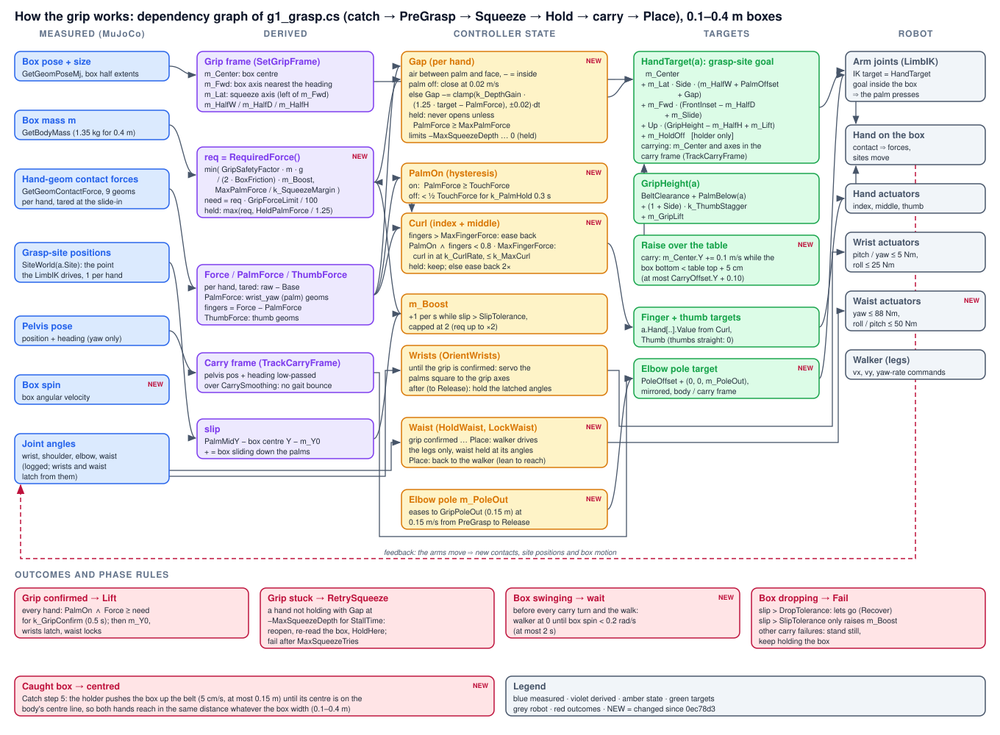

Work report for the LuckyEngine G1 controller G1BoxGrasp (src/, until 31 October the single file g1_grasp.cs) (namespace G1Pipe, class G1BoxGrasp) · covers 16–30 October 2026 · repo ~/projects/robot_code/G1BoxGrasp, engine project ~/Documents/LuckyEngine/Projects/g1_sort
Summary
The controller started this period as a pick-and-place pipeline for a box resting on the conveyor. The conveyor was turned into a gravity slide and a catch was built: the left hand predicts the sliding box, waits in its path and gives with it (sections 5–8). The grip then took most of the work. A high-priority hand friction class and noslip_iterations=20 stopped the box creeping out of the hands, and the carry became walker-only (back off, turn in place, walk straight), so by 25 October the whole pipeline worked for the 0.3 m, 1 kg box (commit 0ec78d3). Making it work for other sizes and weights (sections 13–17) needed a palm-led squeeze with capped palm and finger forces, so the 5 N·m wrists are never twisted open. It also needed a waist lock: the walker's waist yaw was swinging the torso ±25° at about 2 Hz in every turn and flinging the box. On top of those came slower carry speeds, a box raised clear of the table, a centring push that puts any caught box on the body's centre line, and elbows eased outward. On 27 October boxes of 0.2, 0.3 (1 kg and 2 kg) and 0.4 m were caught, carried and placed. The latest 0.1 m run reached the table but slipped out as Place began. The remaining weak spots are slow placing (the turns at the table take two tries), a heavy (2 kg) box sinking 4.4 cm of the 5 cm allowed, and the narrow box's grip. Section 18 is the plan for the next size and weight tests.
From 28 October (sections 20–28) the work moved to heavier and taller boxes and then to collecting imitation-learning data. Heavy boxes walk the body backwards, so the box is now held in pelvis coordinates from the lift, a calm station hold steps the body back onto its spot, the waist stays locked through Place, tall boxes are carried clear of the head, and placing simply lets go over the table (commit 1515f8d “Good enough”). An ACT data pipeline was planned and written. On 30 October recording started working: LuckyEngine 2026.1.2 has no Custom Schema recorder mode, so the pipeline reads MujocoFull sessions and derives the IMU from the pelvis pose; an episode runner records each run, writes a sidecar of what the recorder can't see, and resets the scene so every episode starts exactly as Play does (it took four attempts, the key being a fresh walker on the same frame of the run). Box attributes are randomised with a pool of six boxes dealt like cards, plus a 0–10 cm start jitter. Recording exposed a DragIn runaway and a waist lock that snapped the torso straight; both were fixed. Several grasp tweaks were tried and reverted, and the grasp code is back at the 82bc6f9 baseline. The final 12-episode recording succeeded 8 times with no squeeze failures; 0.2 m boxes slipping at the start of the carry turn are the main remaining problem.
A second 12-episode session the same evening also succeeded 8 times, so the two randomised sessions give 16 good demonstrations (27,067 frames, 9 minutes at 50 Hz) that pass every QA check and convert cleanly into a LeRobot dataset. The 1 kg 0.2 m box failed all 4 of its recorded attempts but was placed in a plain run. Section 28 traces this to the recorder's reset leaving the robot 3–5 cm further from the box: the arm is more stretched, the thumb base no longer presses on the box by accident, and the grip loses the box in the fast in-place turn. Sections 29 and 30 describe the whole data pipeline, from the engine to a trained ACT policy, and how the data will be used: ACT replaces the scripted upper body (arms, hands, waist, waist lock and the walker command) and the RL walker keeps the legs. Section 31 lists what is done, what is still open and the next steps, and section 32 sums up.
1. Project, tools and workflow
2. The pipeline and its phase loop
3. Inspector exposure and tuning (resting-box pipeline)
4. Log analyses of the resting-box pipeline
5. Turning the conveyor into a slide
6. The catch: design iterations
7. The catch as it works now
8. Catch → grasp handoff
9. Friction and the slipping box
10. Engine facts and gotchas learned
11. Scene layout rules
12. Commits and state on 19 October
13. 19–25 October: a carry that works
14. The grip as it works now
15. The turning oscillation and the waist lock
16. Carry speeds and placing
17. Box sizes and weights: results
18. Test plan: more sizes and weights
19. Commits, state and known issues on 27 October
20. 28 October: heavy boxes, tall boxes and “good enough”
21. The ACT data pipeline: plan, tooling and explainer
22. Recording in LuckyEngine 2026.1.2
23. The episode runner and the reset between episodes
24. Box pool randomisation
25. Controller changes found while recording
26. Determinism and why one run is not enough
27. Recording results, 30 October
28. The 1 kg 0.2 m box: plain run against recording
29. The data pipeline end to end
30. Using the data to train and run ACT
31. Commits, state and known issues at submission
32. Conclusion
Appendix A. Inspector fields added
Appendix B. Key formulas
Appendix C. Data layouts
Appendix D. Command reference
1. Project, tools and workflow
Robot and engine. Unitree G1 with three-finger hands (ContentVault/Robots/UnitreeG1ThreeFingers/g1_three_fingers.xml) in LuckyEngine (Hazel editor with MuJoCo physics). The legs and waist are run by learned policies in slots: walker = 1, rotator = 2. The arms use a motion-graph LimbIK whose end effectors are left_grasp_site and right_grasp_site. The IK owns the shoulders and the elbow. The script owns the wrists (a closed-loop wrist servo) and the thumb and finger bases.
Files. The controller is a single file, g1_grasp.cs (about 3,260 lines and 83 inspector fields at the start of this period; 3,721 lines and 92 fields at submission, with the episode runner in g1_grasp.episodes.cs, section 23). On 31 October the class was split, unchanged, into 22 partial-class files by topic under src/ (Config/ inspector fields, Core/ state and phase machine, Phases/ one file per task phase, Hands/, Body/, World/, Diagnostics/, Recording/; map in src/README.md); the old and new builds were compared member by member and are identical. sync_engine.sh builds it and mirrors it into the engine's Source/G1BoxGrasp/. It's developed in the repo and copied into the engine project's Assets/Scripts/Client/Source/. The only difference between the two copies is ArmReach (0.50 in the repo, 0.65 in the engine). The phase diagram is g1_grasp_flow.svg. Logs are in /tmp/LuckyEngine/Logs/APP.log, and every controller line starts with [G1].
Workflow used throughout. Each change was edited in the repo, formatted with csharpier, compile-checked with dotnet build G1BoxGrasp.csproj against the engine's Hazel-ScriptCore.dll (every build ended with 0 errors), and synced to the engine copy. The user then ran the scene, and the next step was decided from the log. Analysis-only requests were answered without code changes. Commits were made only when asked.
2. The pipeline and its phase loop
A phase machine drives everything: Advance() is the only place the phase changes, every phase has a progress watchdog, and Fail(why) leads to Recover. Figure 1 is the black-and-white loop diagram made in this period, from the generator script flow.py, checked by rendering with headless Chrome. It shows the resting-box pipeline. The catch path added later enters it at PreGrasp (section 8, Figure 3).
Figure 1. Phase loop of the resting-box pipeline (g1_grasp_flow.svg). Main chain: Start → FindBox → Approach → Ready → PreGrasp → Squeeze → Lift → PullIn → TurnToTable → WalkToTable → FaceTable → Place → Release → Retract. Optional walk to the box, DragIn and Reposition on the left. The dashed Fail(why) bus leads to Recover, then a retry from FindBox or Failed. A failed squeeze retries through PreGrasp. The footer lists the phase switches and test modes.
The grasp itself works like this. Reachable() plans the grip and checks reach: every hand target within HandLimit% of the arm, measured from the standing pose, and each grip point at least MinSide off the body's centre line. Both hands glide to pre-grip points 10 cm in front of the box, 3 cm wider than the grip. After a tare they slide in along the side faces, with ApproachGap of air between each palm and its face. Squeeze is admittance control on palm force: the gap target goes negative down to −MaxSqueezeDepth until the palm-only force reaches the required squeeze, factor × m·g / (2μ). The index and middle fingers curl while the palm is on its face. A grip that stalls at full depth is reopened and retried (MaxSqueezeTries).
3. Inspector exposure and tuning (resting-box pipeline)
Most of the requests in the first part asked for a constant to be put in the inspector so it could be tuned without code. Everything added is listed in Appendix A. The decisions that mattered:
HandLimit vs IKTargetLimit. One limit was split into two. HandLimit (93) is the planning limit, measured from the standing pose. IKTargetLimit (95) is the per-frame cap, measured from the live shoulder: any IK target beyond it is pulled in toward the shoulder. For a short time the cap was tied to HandLimit. At HandLimit 110 that let targets reach 110% of the arm, and the result was the singularity described in section 4. The user's point that ">100% is sometimes not unreachable" was handled by keeping the plan limit tunable while the cap stays under 100.
GripForceLimit (100%). The fraction of the required squeeze each hand must hold before the grip counts, so a squeeze that falls slightly short no longer stalls.
GripComfort (85%) replaced k_Comfort. The grip is raised up the box until each grasp site is within this share of the arm.
Thumb angles, all clamped to the joint limits from the MJCF:
ThumbOpenDeg (41.25, thumb_1 out);
ThumbGripDeg (0, thumb_1 in);
ThumbTipDeg (0, thumb_2).
The thumb-related ranges are thumb_1 −0.724…1.047 rad and thumb_2 0…1.745 rad. Thumb_0 (±1.047) isn't driven by the script.
Tolerances group. Fourteen hidden constants became fields (ReachProgress, the four Placed* checks, TopMargin, the three Align* values, MinSide, MaxGripUp, StillSpeed/StillTime, TouchForce, Slip/Drop tolerance and LostDistance), plus ReachTolerance moved here.
MaxSqueezeDepth (0.03 by default; the scene used 0.05). How far past its face a palm target may go, and so how much arm tracking error a squeeze can make up.
Palm height. The answer to "which variable decides how far down the box sides the palm goes": BeltClearance (Box group). The grip height is BeltClearance + PalmBelow + (1+Side)·k_ThumbStagger + GripLift, so the left hand sits 3.6 cm higher than the right so the straight thumbs pass each other.
That stage was committed as a571ea4 "good enough pipeline". The commit also includes the redrawn phase diagram.
4. Log analyses of the resting-box pipeline
Run / question
What the log showed
Explanation / outcome
Six runs on 16 Oct
2 successes. Short side-step bursts stalled for a box far off-centre. The rotator's carry turn made the box slip. A narrow box was blocked by MinSide and looped. One run was a stale build.
Several fixes proposed but not done: escalate stalled bursts, gentler carry turns, stop chasing a pushed box during PreGrasp, wrap the thumbs after the palms are on.
HandLimit > 100 (110)
The slowdown and twisting started on the frame the per-frame IK target crossed 100% (right hand 1.04 m/s, sim 0.13× real time). Then the hands pushed the box, which moved the goals, which pushed the box again.
A target beyond full stretch is an IK singularity. Fixed by the separate IKTargetLimit cap at 95%.
17:42, cap at 95%
No slowdown. Failed "right hand short": the hand was 0.6 cm over the box top against PlacedTop 0.01, with ReachTolerance 0.05 borderline.
The tolerances were too strict, which led to exposing all of them (section 3).
15:54, box halved (0.152 wide)
Rejected by MinSide 0.11: a grip point sat 0.10 m from the centre line. After MaxBoxAttempts = 5 the box was skipped and FindBox stalled.
The arm sweeps showed IK accuracy falls off within about 0.12 m of the centre line, so narrow boxes were blocked by design.
16:00, squeeze not working
ThumbGripDeg 15 drove the thumb tips into the front face. They pinned the hands with friction, pushed the box 3.3 cm away and tipped it. The palms stayed 2.5–3 cm off. The right arm's IK landed 1.9 cm outward on the narrow box, against 0.5 cm inward on the wide one.
Keep the thumbs straight (0) for the squeeze.
Narrow box always leaves a gap
The same gap is commanded for both widths, but the arm's tracking error near the centre line uses up the squeeze depth.
MaxSqueezeDepth exposed.
16:41, 0.15 box, depth 0.05
Approach left the box 4.4 cm off-centre, inside AlignSide 0.06. The left grip point was 0.07 m from the centre line. During the slide-in the left target moved 3 cm inward but the hand didn't move: lag 0.9 → 4.6 cm, then 7 cm in the squeeze. The left palm stayed 6.6 → 4.2 cm off its face. The right hand gripped (fingers 34 N) and pushed the box, which tipped on the retry.
More depth only moves the target; the arm doesn't follow that close to the centre line. Suggested: AlignSide about 0.015 and MinSide back to 0.11. The real fix would be finer centring steps and checking MinSide at the final grip points instead of the pre-grip ones.
5. Turning the conveyor into a slide
5.1 What the scene had
Entity
Contents
State
ConveyorBelt
G1Sort.BeltForce: speed 0.3, direction +Z, for PoolBox_01..10. Writes box qpos each step.
Did nothing: it looks bodies up by tag, but scene bodies are named lucky_body_<entityID>. Even working, a qpos-driven box would pass through a hand.
ConveyorGateController
G1Sort.ConveyorGate: weld/unweld a Trapdoor body every 1 s.
Did nothing: no Trapdoor entity, and the same tag lookup.
FunnelWall_01/02/03/East
A vertical funnel at x 0.80–0.95, z 0.575–0.725, height 0.88–2.58.
Inside width exactly 0.15 m, the box width, so a box would jam. It sits over the far side of the belt.
SpawnMarker
5 cm cube with a collider inside the funnel.
Would catch a falling box.
Belt geometry
x 0.44–1.02 (0.58 wide), z −0.735…1.011, top at about 0.49, friction 1.7, tilted 1° with the low end at −Z.
The robot faces +X, so its left is −Z. A box sliding −Z travels toward the robot's left, which is also the table side.
5.2 Script belt vs. gravity slide
Two options were compared:
Scripted belt: a speed controller with a force limit, applied through SetQfrcAppliedByDof. The force has to be zeroed when the box is lifted, because MuJoCo keeps applied forces until they're overwritten.
Gravity slide: a tilted belt with low friction, and no script at all.
The user chose the slide, and it's the better fit for the catch:
the box arrives with real momentum;
a stopped box only leans on the palm with m·g·(sinθ − μcosθ), about 0.1–0.25 N.
Two requirements came out of the comparison:
Lower the friction on both the box and the belt. MuJoCo uses the larger of the two frictions, so lowering only the belt does nothing.
Add an end stop at the low end, so a missed box doesn't fall off.
Tilt
μ (box)
downhill accel
0.4 m/s knock slides
Note
1.9°
0.01
0.23 m/s²
0.82 m
First scene. A light touch sends the box off the belt.
5°
0.06
0.27 m/s²
0.14 m
Same speed, much more damping.
8°
0.11
0.30 m/s²
0.07 m
Keep μ at about 70–80% of tanθ; the pyramidal friction cone tends to stick near the limit.
The belt was later run at 2.7–3.1°. The measured accelerations, 0.14 m/s² at 3.1° and 0.07 m/s² at 2.7°, match g(sinθ − μcosθ) with μ ≈ 0.04 (the belt's value). The belt also has a slight twist (Rotation Y 0.0099, Z −0.0016), which makes the box drift about 2 cm outward per metre.
Figure 2. Top view of the working layout (Hazel coordinates, Y up). The box slides along x ≈ 0.63 toward −Z, the robot's left. The left palm closes the path at the box's downhill face. It first waits in front of the path (toward the robot) and then slides forward into it. After the catch, the right hand comes down on the uphill face. The waiting point must stay in front of the belt's near edge (x 0.44).
6. The catch: design iterations
The catch took about a dozen log-driven iterations. Each row below is one change and the run that motivated it.
#
Version
What the run showed
Change made
1
Hold the box with WeldBody until the hand is ready, then release
The box started sliding at t=0, ran the whole belt and fell off the end after about 4.3 s. One persistent WeldBody call made in Begin didn't hold the box. The robot then side-stepped toward a box on the floor.
The user dropped the weld: "assume the box starts at the top and accelerates, track it from the start, predict, put the left hand in between".
2
Track from the first frame and predict; stop spot straight ahead; shift it down the belt if the box would beat the hand
The robot spawned out of reach (pelvis x 0.02, target 151–193% of the arm). The spawn lurch moved the pelvis 0.26 m forward and back and turned it to −34°. The palm came down from above onto the box edge. The box bounced off the stiff palm (0.24 in, −0.50 m/s out) and was pushed outward, x 0.63 → 0.80.
Diagnosis: a stiff arm plus a frictionless belt makes an elastic bounce; the hand came in from above; the robot was too far away.
3
Side approach, give, measured acceleration
—
Waiting point in front of the path, fingertips clear (site k_CatchFront 0.10 + FrontInset in front of the front face; fingertips reach about 8.5 cm past the site), then a slide straight in. A give that runs with the box and brakes over CatchGive. Acceleration learned from the box's speed changes.
4
Same
The right hand flailed. CatchPose bypassed the fold smoothing, so its IK target was glued to the lurching pelvis, and its wrist servoed to the box frame. The left hand's slide waited on the right hand's moves (the moving-check looked at both arms). It slid in too late, at 103–110% reach, and the fingers flung the box 0.5 m sideways.
The free hand is parked (smoothed fold, wrist on the heading). The moving-check looks at the stopper only. The slide starts only if the box is ≥ 0.8 s away.
5
Same
The lurch comes from the spawn: the pelvis starts at 0.79 m and drops to 0.47, then staggers for about 3 s, the same with no catching. The box arrives at 2.7 s. The first-frame shift came from the spawn pose (182%) and could never come back down.
Step 0: wait folded until the body is still, or until the box is so close the hand must go. The spot is fixed in the world once the hand goes. The shift is predicted only once the hand is at its waiting point.
6
Same
"The catching works, but low friction knocks the box away." The shift jumped 15 cm during the slide, turning it into a 25 cm diagonal sweep through the box's lane.
Shift frozen once the slide starts. Slide needs +0.2 s spare (1.0 s in total).
7
5° tilt, μ 0.06
The hand never got settled in time: the first move was planned from the spawn pose as one fixed 2 s move, and every target change restarted a move of at least 0.5 s.
Continuous tracking: the stopper's IK command eases toward its target at up to CatchHandSpeed, with no restarts.
8
3.1° tilt
"Sudden jerks bounce the box." The give started 0.29 s early, jumped from 0 to 0.45 m/s, and finished before the box arrived, so the box hit a stopped palm and bounced (0.49 → −0.35 m/s). The arm was at 87–95% reach. The palm hit above the centre of mass, twisting the box outward.
Speed-matched give: palm speed = vbox(1 − √(gap/0.05 m)), then braking once the box is on the palm. Stopper palm centred on the box's mid-height. Committed: 81c4fea "catch works".
7. The catch as it works now
Figure 3. Catch steps (white) and the handoff into the grasp (green). Any step can fail into Recover (dashed).
7.1 How each part works
Prediction.
Path: the box's path is a line through where it rests on the belt, along the in-plane downhill direction d = normalize(n·ny − up).
Stop spot: the path point straight ahead of the pelvis.
Hand time: distance ÷ CatchHandSpeed + about 0.2 s of easing + 0.3 s of arm lag.
Box position at that time: u + v·t + ½a·t², where a starts at the frictionless value g·sinθ (the earliest the box can arrive) and is then learned from the box's speed changes. It came out at 0.233 m/s² at 1.9°, exactly √(0.33 − 0.01·g).
Stopper motion. The left hand's IK command tracks its target continuously: it moves at up to CatchHandSpeed, eases in near the target, and never restarts a fixed-length move. During the give it follows the moving spot directly.
Give. Over the box's last 5 cm the spot speeds up, so the gap closes at a steadily falling rate and the palm meets the box at about its speed. Once the box is on the palm (force over TouchForce, or within 5 mm) the spot brakes at v²/(2·CatchGive). In the good runs, the palm was already moving at 0.19 m/s when a 0.32 m/s box touched it, the impact was 5.4 N, and the box stopped on the spot.
Free hand. The right hand is parked in the smoothed fold, with its wrist on the heading, so it never feeds body sway back into the walker.
Start pose. At spawn the elbows are at 0, which means 90° bent with the forearms pointing forward, over the belt when the robot stands close. StartShoulderDeg (25, 10, 0) and StartElbowDeg (−40) are written straight into the joint positions on the first frame, and the first IK targets are aimed at the fold point.
8. Catch → grasp handoff
Version
What the run showed
Change / decision
v1: holder flag and normal Reachable() (commit 8863226)
The catch was good, but the give carried the box 10.4 cm left and the body drifted 2 cm right. The box ended 12 cm left of straight ahead, so the right grip point sat 0.4 cm from the centre line and MinSide failed. With the box path at x 0.77 the left hand was 9–12 cm short (capped).
The right arm never got a target. The box path has to stay at x ≈ 0.63.
Give-travel planning (start the spot 11 cm up the belt)
Worse. With the box at x 0.715 the waiting point (x 0.49) ended up 5 cm over the belt and 3 cm above it. The sagging, fully stretched hand rammed the conveyor (70–237 N, sim 0.2× real time).
Rolled back to 8863226. The patch is saved in the scratchpad (uncommitted_give_plan.patch).
v2: pinned holder (commit 9a291ce)
The catch phase is untouched. The left target is pinned where its IK command was when the box was caught, and from then on only its squeeze, the lift and the carry move it. The right hand gets its own reach check (MinSide only warns) and goes in through PreGrasp. The grasp ran: right hand at 93%, slid in, both "placed". The grip was declared, but the palms were at 0 N: curled fingertips (26–28 N) held the palms off the faces. The box rotated at 0.46–1.1 rad/s and slipped 5.2 cm in the lift.
Rotation diagnosis (section 9). Then: palm-on-face became a live check with finger back-off, and the palms are levelled and kept fully on their faces.
Palm fixes (uncommitted)
The palms now reach the faces, but contact keeps switching between the palm and the flush, straight finger links (about 20 N palm / 0 fingers, then the reverse, every 40 ms). The live palm check flickers, so the grip never confirms. Meanwhile the box is squeezed out forward (x 0.667 → 0.885, up to 0.58 m/s) with the palms only 1–4° off parallel.
Effective hand friction ≈ the box's 0.01. Hand friction class added to the MJCF (section 9). Flicker fix proposed (section 12).
Holder mechanics.HoldHere() stores the holder's offset from its normal HandTarget in grip-frame components (along m_Lat, m_Fwd, up). HandTarget adds the offset back for the holder in the current frame, which follows the body while carrying. Two things follow: the holder never jumps when phases change, and it stays pinned through the squeeze, lift, carry and place. While a box is held, PreGrasp and Squeeze don't re-read the box every frame. If they did, the holder's target would follow the box, and a box leaning on the palm would creep away with it.
Right palm height. The right palm goes level with the holder's on a box wide enough for the two straight thumbs to pass (width over about 2 × 0.095 m). On a narrower box it goes 3.6 cm above. Either way it's clamped so the whole palm stays on the face, at least BeltClearance above the box bottom and under the box top.
Palm-driven squeeze, live. "Palm on its face" turns on at TouchForce and off below half of it. The fingers curl only while it's on and ease back at twice the rate when it isn't. The grip counts only if both palms are on at that moment.
9. Friction and the slipping box
Why a two-point grip lets the box pivot
When only fingertips touch, the box is held at two points and can rotate about the line between them. The only thing resisting that is torsional friction, the second friction number: 0.005 m × 27 N ≈ 0.13 N·m per hand. The box's weight (about 9.7 N for the 0.30 box) acts 3–5 cm from that line, a twist of 0.3–0.5 N·m, so the box rotated (logged 0.46–1.1 rad/s). Flat palms on the faces resist this; a torsional value of about 0.05 would too (about 1.3 N·m per hand).
Effective hand–box friction is close to the box's, not the hand's
With the palms 1–4° off parallel and squeezing 14–28 N each, a contact with μ = 1 can't be pushed out: the box would need a push of about 56 N. Yet the box slid out forward at up to 0.58 m/s. The belt's numbers show MuJoCo combining box and belt with the usual "larger of the two" rule. So the hands must be getting about the box's 0.01. Either the engine gives scene geoms precedence, or the robot's hand geoms have low friction. This wasn't verified directly, because there's no API to read geom friction.
Fix applied (robot model, outside the repo; backup g1_three_fingers.xml.bak in the scratchpad). A new default class under collision, used by all 18 hand collision geoms: both wrist_yaw/palm geoms plus thumb_0/1/2, index_0/1 and middle_0/1, per hand:
With a higher priority, MuJoCo uses that geom's friction outright instead of combining the two. The hands therefore grip with μ = 1.5 and torsion 0.05 whatever they touch, while the box-on-belt contact keeps its low friction. condim="4" makes the torsional value take effect. This change is not yet tested.
10. Engine facts and gotchas learned
Topic
Fact
Scene body names
Scene entities with MuJoCo colliders become bodies named lucky_body_<entityID>. GetBodyID(tag) fails for them, which is why the old BeltForce and ConveyorGate scripts did nothing.
Frames
MuJoCo-frame poses are converted with Conjugate(GetAxisHzToMj())·p + GetSceneTranslation(). Hazel is Y-up; yaw = atan2(−z, x); left of a heading = (z, 0, −x).
Weld API
WeldBody(uint bodyID, Vector3 positionMj, Quaternion orientationMj, bool persistent = true) and UnweldBody. A single persistent call in Begin didn't hold a box. The user's own older scripts re-assert the weld every frame.
No velocity or friction setters
Scripts can set qpos, ctrl and applied forces (SetQfrcAppliedByDof), but not qvel or geom friction. Bodies can't be added after the model is compiled, so use a pool of pre-placed boxes instead of spawning.
Friction combination
Default: per component, the larger of the two geoms' values; with priority, the higher-priority geom's values. The engine uses a pyramidal friction cone (its log warns of a "Velcro effect"). Torsional friction only applies with condim ≥ 4.
Spawn dynamics
The pelvis spawns at 0.793 m with straight legs, drops to about 0.47–0.50 within 0.5 s, lurches about 0.2–0.3 m forward and back, and settles after about 3 s, with or without arm motion.
Elbow zero
Elbow 0 is 90° bent with the forearm level and forward; +90° is straight; −60° is folded up.
IK cap
The capped target is pulled straight in toward the shoulder, so capping is smooth. Jerks at 90%+ reach come from the near-straight arm's sensitivity, not from the cap.
Motion graph
The Start trigger stores the current pose and blends to the IK solution over Duration; after that, targets are tracked every frame.
Contact sensing
Hand contact force is read per geom and tared. With straight fingers, the palm and the proximal finger links are flush, and the reading switches between them from frame to frame.
11. Scene layout rules
Box path in reach, but in front of the belt edge. The waiting point is about 15 cm in front of the box's front face and must stay in front of the belt's near edge (x 0.44). So the box centre should be at x ≤ about 0.66; x ≈ 0.60–0.63 works.
Pelvis about 0.27 m behind the box's front face, x ≈ 0.28–0.31 for a box at 0.63. That gave a comfortable 80–83% reach. At a box path of 0.715–0.80 the left hand was capped at 104–115% and stayed 9–15 cm short.
Arrival time. Box arrival should come after the spawn stagger (about 3 s). Lower the tilt slightly or start the box further up the belt.
Friction. Keep the box's sliding μ below tanθ (about 70–80% of it). A far-side rail, 3–5 cm high at x ≈ 1.03, catches knocked boxes.
Belt twist. Zero the belt's Rotation Y and Z (0.0099, −0.0016) so the box slides straight.
12. Commits and state on 19 October
This section records the state at the end of the first period. Sections 13–19 cover what came after.
Commit
Date
Message
Contents
a571ea4
18 Oct 19:32
good enough pipeline
The inspector fields from section 3 and the redrawn phase SVG.
81c4fea
18 Oct 21:32
catch works
CatchBox phase: prediction, waiting point and slide-in, speed-matched give, parked free hand, continuous tracking.
8863226
18 Oct 23:08
Catch works perfectly; the other arm is still not coming
Tucked start pose. Handoff v1, blocked by MinSide.
9a291ce
19 Oct 21:20
Catch working perfectly; right arm comes in but the box slips
Pinned holder (HoldHere). Right-hand reach check. Holder kept through the carry.
Uncommitted right now:
in g1_grasp.cs (29 lines added, 21 removed): the live palm-on-face check with finger back-off, and the right palm levelled and kept fully on its face;
in the robot model: the hand friction class (outside the repo).
Next steps (as planned on 19 October)
Test the hand friction class. Expect no more squirting, and much less pivoting.
Palm-contact flicker. While the fingers are nearly straight (curl under about 0.1 rad), count palm plus finger force as "flat on the face". Still require palm-only contact before the fingers curl further.
Robustness: the next topic you raised. Make the catch and grasp work for different box sizes, not just favourable ones, and still work with zero torsional friction and when the box turns on impact. Candidate pieces:
re-read the box's yaw and centre after the catch, and re-align the grip frame and the right hand to it;
pick the stop spot and grip heights from the box's size;
plan the give's travel without letting the waiting point cross the belt edge;
check reach before the hand goes, and fail early with "move the box or robot by X";
a squeeze that resists rotation: palms at the same height, through the box's centre of mass, with the fingers kept straight until both palms carry load.
Message fixes. The "box sits 0.25 m too low" warning really means "too far ahead". A palm that never reaches its spot should report that, instead of "never stopped" after 15 s.
Repeat loop. A pool of pre-placed boxes, or an end stop and recycle, for RepeatLoop with the catch.
13. 19–25 October: a carry that works
Problem
What the logs showed
Fix
Box squirted out of the squeeze
The hands gripped with about the box's own friction (0.01).
The hand friction class from section 9 (priority=2, μ 1.5, torsion 0.05, condim 4) worked: the box no longer squirts, and the whole pipeline ran with the box at a favourable position (commit 21de146).
Slow creep in the hands
Over a long carry the box crept down the palms by millimetres per second, even with both palms on.
noslip_iterations="20" in the robot MJCF's <option>. MuJoCo's soft contacts let a squeezed box creep; the noslip solver removes that. Commit 12d4f2e "Slippage problem fixed".
Jerky walk to the table
The rotator's take-over lurched the body, and an IK-led turn dragged the box.
Walker-only carry: BackOff straight back from the conveyor, turn in place on the walker (the rotator lurches the body when it takes over), a straight walk, then FaceTable. A failed turn never drops the box; the robot goes on from where it is.
Shoulders and elbows oscillating while turning
The hand targets followed every step of the gait.
The hand targets ride a smoothed carry frame (CarrySmoothing, 0.2 s low-pass of the pelvis pose and heading). The wrists hold their angles from grip confirm onward.
With these, the 0.3 m, 1 kg box went through catch, grip, lift, back-off, turn, walk and place reliably, and the user committed it as 0ec78d3. The next goal was set then: different box sizes and weights.
14. The grip as it works now

Figure 4. Dependency graph of the grip (grip_dependency.svg), from the measured quantities through the controller state to the targets the IK and actuators get. NEW marks what changed since 0ec78d3.
Every piece below came from a log. The constraint throughout: the wrist actuators stay at the MJCF's 5 N·m (pitch and yaw), because raising them would widen the sim-to-real gap.
Palm-led squeeze. The gap of each hand is an admittance on the palm's force only. While held, a palm that comes off closes straight back in, and the hand never opens unless the palm presses past MaxPalmForce (40 N). While holding, each palm aims at HeldPalmForce (20 N), or more if the box's weight needs it. Palm-on has a 0.3 s hold-over, so carry jostle doesn't make it flicker.
Capped fingers. Index and middle curl in while the palm is on, but never press past MaxFingerForce (25 N): over it they ease back, and under 0.8× it they curl on. They press 16–22 cm out from the wrist, twice the palm's lever. Uncapped, they reached 60–100 N and dragged the wrist yaws 50–57° off their commands (right −11° → −68°, left 5° → 53°), which lifted the palms off. With both caps, the wrists stay within about 4° of their latched angles.
Why not a full finger wrap. With FrontInset 0.04 the knuckles sit 4 cm behind the box's front face. Curling then presses the first finger segment into the side face instead of hooking the front corner, so a curl strong enough to wrap is exactly what twists the wrists open. The thumbs stay straight (0); every thumb curl tried pushed the box forward.
Centring push (restored on 27 October). After the catch, the holding hand pushes the box up the belt, at 5 cm/s and at most 0.15 m, until its centre is on the body's centre line. Both hands then reach in the same distance whatever the box width. The 0.1 m box needed this: caught 8 cm left of centre, its right palm had to reach 3 cm across the centre line, and the right upper arm hit the torso 0.20 m short of its target.
Elbows out. From PreGrasp to Release the elbow hint eases 0.15 m further out (GripPoleOut, at 0.15 m/s), so the IK closes the hands by turning the shoulders rather than swinging the upper arms into the torso. Switching it out all at once had jolted the box before, hence the easing.
15. The turning oscillation and the waist lock
With the grip holding, the 0.4 m box still slid out in every turn. New logging of the torso and waist, the shoulder and elbow angles and the grasp sites in body coordinates showed where the swing came from:
Turn time
Pelvis yaw rate
Torso yaw rate
Waist yaw
Left shoulder pitch
Left hand fwd of pelvis
0.02 s
+0.11
+1.16 rad/s
+8°
10°
0.26 m
0.26 s
−0.11
−1.56
−12°
17°
0.30
0.74 s
−0.26
−2.67
−8°
13°
0.30
2.42 s
+0.96
+2.75
−27°
34°
0.28
3.14 s
+1.23
+4.91
0°
24°
0.23
The torso, not the pelvis, oscillated. It twisted on the waist yaw joint 10–20× faster than the pelvis turned, ±25° at about 2 Hz. It started at the end of the back-off, before the turn.
The arms followed the twist. The hands swung ±4 cm fore-and-aft in opposite directions, and the shoulders swung in antiphase as the IK pulled the hands back to targets that barely moved (about 1 cm). Pulling the hands back reacted on the torso and kept the oscillation going.
Fix: LockWaist. From grip confirm until Place, the walker drives the legs only (SetDrivenJoints without the three waist joints). The script holds waist yaw, roll and pitch at their angles at confirm, with up to 88 / 50 / 50 N·m. Afterwards the torso yaw rate matched the pelvis everywhere, the box's spin stayed at 0.1–0.3 rad/s, and the 0.4 m box reached the table for the first time.
Side effect: with the waist locked, a 1.5 rad/s turn command stalls, so the carry turns now use 2.0.
Two more carry rules came out of the same logs. Before every carry turn and before the walk, the walker stays at zero until the box spins under 0.2 rad/s (at most 2 s). A turn's command eases in over CarryTurnRamp, eases down over the last 20°, and ramps out over 0.5 s.
16. Carry speeds and placing
Speeds. Going faster with the waist locked (back 0.6, turn 2.5 rad/s, walk 1.0 m/s) backfired. The back-off overshot to 0.50 m against an aim of 0.20, the turns overshot by 15°, and the robot ended 0.62 m from its stand spot. The settings that work: CarryBackSpeed 0.4, CarryTurnCmd 2.0, CarryWalkSpeed 0.7. The stops allow for the coast: the back-off stops early by speed × 0.4 s (but covers at least half its distance), and the walk stops early in proportion to the square of its speed.
Table clearance. The carried box sagged until its bottom was level with the table top (0.495 vs 0.494 m) and hit the edge, bouncing the robot 0.31 m back. Now, during the turn, walk and FaceTable, the carry target rises at 0.1 m/s while the measured box bottom is less than 5 cm over the table top, up to 0.10 m above CarryOffset.
Reach for placing. From 0.45 m away the arms ended fully stretched (shoulder pitch −42° to −65°) with the 0.4 m box still 0.11–0.14 m above its spot. The 0.4 m box's wider hands reach less far forward, and a locked waist can't lean. Now the robot stands 0.33 m from the slot (PlaceStandDistance), and the waist goes back to the walker for Place so the torso can lean into the reach.
Slot choice. The slot is chosen nearest the point the robot turns at after backing off, not nearest where it stands at the conveyor. Before this, a far slot made the walk curve back into the conveyor.
Placing is slow. FaceTable takes 5.5–9.6 s, because its turns usually need two tries ending 6–14° off. Place then lowers at 3 cm/s for 2–3.5 s. A whole run takes about 38–48 s, and the table end accounts for 8–12 s of it.
17. Box sizes and weights: results
Box mass is read from the logged squeeze: req = 2·m·g / (2·1), so m = req / 9.81. All the boxes are 0.15 m deep and about 0.15–0.17 m high. All runs are 27 October.
Time
Width
Mass
Code
Result
Max sink in hands
Notes
17:55
0.4 m
1.35 kg
e03fcde
placed, 1.2 cm above the spot
2.6 cm
Turns took two tries; the walk ended 0.17 m off.
17:58
0.3 m
1.0 kg
e03fcde
placed, 1.8 cm above
1.3 cm
Total about 38 s.
17:59
0.2 m
0.67 kg
e03fcde
placed, 2.0 cm above
1.0 cm
Caught 8 cm off centre. The left palm was at full squeeze depth with 2.5 N; the fingers carried it.
18:00
0.1 m
—
e03fcde
failed in PreGrasp
—
The right hand stopped 0.20 m short: its upper arm hit the torso reaching across the centre line. Led to the centring push and elbows out.
18:01
0.3 m
2.0 kg
e03fcde
placed, 0.5 cm above
4.4 cm
The palms were on throughout (20–70 N). Sinking built in the turn (+1.5 cm) and the Place (+1.7 cm), close to the 5 cm drop limit.
18:33
0.1 m
0.67 kg
centring + elbows out
slipped out at the start of Place (6.0 cm)
—
Pushed 0.146 m, which left it 5.7 cm off centre at the 0.15 m cap. The grip confirmed with the left palm at 0 N (left fingers 25 N) and the right palm at 11 N. It was carried to the table and slipped 0.8 s after the waist was handed back.
18. Test plan: more sizes and weights
GoalMap the envelope of box width, depth, height and mass that the pipeline handles end to end, find where and why each limit fails, and keep the working cases working as the code changes.
18.1 Method
One setting, one run. The simulation is deterministic: the same code and settings give identical runs. Repeats are only worth it with a deliberate change: the box's start 2 cm up or down the belt, or the robot's start yaw ±3°. Three perturbed runs per cell are enough to show whether a pass is robust.
Baseline. 0.3 m wide, 0.15 m deep, 0.15 m high, 1 kg, with the inspector values of commit e03fcde plus the centring push. Every sweep changes one factor from this baseline. Then come the corners.
Per-run summary. A small log summariser (to be written, e.g. tools/runsummary.py) prints one line per run from the [G1] lines:
phase reached and outcome;
catch impact force and give;
centring push and the offset left;
palm and finger force per hand at grip confirm, and time to confirm;
the largest box sink and the phase it happened in;
the largest wrist deviation from its latched angle;
peak box spin in turns;
back-off distance, turn tries and final heading error, walk error;
release height and distance from the slot;
time per phase.
Pass criteria. Placed with the release under 2.5 cm above the spot and within 3 cm of the slot. The box sinks less than 2.5 cm (half the drop limit). No wrist moves more than 15° from its latched angle. The whole run takes under 60 s.
Centring push (cap 0.15 m), grip points near the centre line, right-hand reach, palm vs finger share
Narrow: the push hits its 0.15 m cap and the palms barely press. Fixes: a higher cap, or move CatchPalmSide in by half the box width so less push is needed. Wide: arm span and reach at the table, and slots 0.25 m apart can't fit 0.4 m boxes (raise PlaceSpacing to the width plus 5 cm).
Mass (0.3 m)
0.25, 0.5, 1.0, 1.5, 2.0, 2.5, 3.0 kg
Sink per phase, palm force against the 40 N cap, wrist deviation, catch impact
req = m·g at factor 2 reaches the cap (40/1.25 = 32 N) at about 3.3 kg; 2 kg already sinks 4.4 cm. Fixes: GripSafetyFactor 3; keep the waist locked until the box is lowered; lower more slowly; for heavier boxes, revisit MaxPalmForce against the 5 N·m wrist budget.
Depth (0.3 m, 1 kg)
0.10, 0.15, 0.20, 0.25 m
Palm centre against the box's centre of mass (the box pitching), fingertips past the front face
A deep box hangs its centre of mass behind the palms and pitches; a shallow one puts the palms past its back. Fix: set the grip's fore-aft position from the depth (palm centre over the centre of mass).
Height (0.3 m, 1 kg)
0.10, 0.15, 0.20, 0.25 m
Grip height, clearance over the table, the box tipping in the catch
A short box leaves little face under the palm (BeltClearance). A tall one tips on impact and needs more raise over the table (cap 0.10 m).
Corners
width 0.1 / 0.4 × mass 0.5 / 2.0 kg
Everything above
Narrow-and-heavy is the hardest case: a small palm patch and a large weight.
Arrival speed
Box start 0, +0.1, +0.2 m further up the belt
Catch impact, give and the box spinning on the palm
A higher impact may knock a heavy box off the stopper hand; CatchGive or a longer give.
18.3 Order
Write the log summariser and re-run the baseline to record the reference numbers.
Fix the two open failures first:
the 0.1 m box slipping at the start of Place: hand the waist back only after the box is lowered, or ramp it back;
the 2 kg sinking: try GripSafetyFactor 3.
Re-run both.
Width sweep, then mass sweep, then depth and height, then the corners. Stop a sweep at its first two consecutive failures and analyse them before going on.
After each code change, re-run the regression set: 0.1, 0.2, 0.3, 0.4 m at 1 kg, and 0.3 m at 2 kg.
Placing speed: once the sweeps pass, make FaceTable get there in one try (a lower command near the end, or a heading correction during the walk) and speed up the lowering. The goal is a whole run under 40 s.
19. Commits, state and known issues on 27 October
Commit
Date
Message
Contents
21de146
19 Oct 22:33
Whole pipeline works with the box at a favourable position; next: robustness
Hand friction class in effect, palm-led squeeze, full carry and place.
12d4f2e
25 Oct 13:21
Slippage problem fixed
noslip_iterations="20" (robot MJCF) and the carry changes.
0ec78d3
25 Oct 13:54
Pipeline works really well; next: different box sizes and weights
Walker-only back-off, turn and walk; smoothed carry frame; wrists held after confirm.
e03fcde
27 Oct 17:58
0.4 m box works: waist lock, palm/finger force caps, slower carry
Sections 14–16, plus FreeSlot from the turning point and arm, site and waist logging.
82bc6f9
27 Oct 18:42
Pipeline works for 0.1–0.4 m boxes; placing is a bit slow
Centring push to the body's centre line, GripPoleOut, this report and the new grip graph.
Known issues.
Placing is slow: FaceTable needs two turn tries.
The 2 kg box sinks close to the drop limit.
The 0.1 m box's grip rests mostly on fingers (the left palm at 0 N), and the latest run slipped as Place began.
The carry turns overshoot by about 15°.
The controller is 3,671 lines with 96 inspector fields. The engine copy still differs only in ArmReach.
20. 28 October: heavy boxes, tall boxes and “good enough”
The 27 October pipeline handled 0.1–0.4 m boxes of about 1 kg. The next round of tests made the boxes heavier (density 150 → 300, up to 3.3 kg) and taller. Four new problems came out of the logs, and the fixes below were committed as 1515f8d “Good enough”.
20.1 Heavy boxes walk the body backwards
With a 2–3.3 kg box held 0.3 m in front of the chest, the walker leans back against the load and takes small steps backwards. In the logged 0.3 m and 0.4 m runs the pelvis drifted 10–20 cm back while standing with the box, so the back-off, the turn and the walk all started from the wrong place and the table spot was missed. Three changes:
Change
What it does
Why
A. Lift in pelvis coordinates
At the start of the lift the grip centre and axes are converted into the pelvis frame (ToBody). The box rises k_ClearLift (3 cm) first, then rises the rest of LiftHeight while it is pulled in toward CarryX() at k_CarrySpeed (0.1 m/s).
A body pushed back by the weight no longer stretches the arms after it: the box follows the body, and a heavy box comes close to the chest early.
B. Station hold
When standing with the box (after the back-off, through the turns, at the table), if the pelvis has drifted more than k_DriftTol (10 cm) from its anchor, the walker steps it back, one direction at a time, until within k_DriftDone (4 cm).
Puts the body back where the plan expects it.
C. Waist lock through Place
lockIt = LockWaist && Phase > Squeeze && Phase < Release (it used to end at Place).
Given back during Place, the walker swung a heavy box loose: waist yaw ±10°, pitch 8–15°.
20.2 The station hold must stay calm
The first station hold ran everywhere, including the lift and pull-in, and corrected forward/back, sideways and yaw at once. Two failures followed:
A to-and-fro limit cycle during the lift. The correction steps rocked the body ±6 cm with a period of about 1.2 s, and flung a 3.3 kg tall box. The user's words: “the robot does a to and fro motion destabilizing everything, it wasn't happening before your weight updates”.
Stumbles in the back-off and turns. Combined commands (vx + vy + yaw, or sideways while still coasting) dropped the pelvis to 0.50 m and swung the heading 19°.
The final rules: no station hold in Lift or PullIn; a correction starts only when the body has been still for StillTime and is not turning; it moves in one direction only (forward/back if that error exceeds 4 cm, else sideways); it stops as soon as the remaining error is under 4 cm, when overshot, or when a turn starts. The anchor is the grip spot until the back-off ends, then the back-off spot, then the stand spot at the table.
20.3 Tall boxes: the right wrist and the head
Right wrist wound to its limit. On a tall box the parked right hand's wrist servo kept steering toward an orientation it could not reach and wound the wrist yaw to 73–93°, so the hand pointed down. The fix of the day: the wrists of hands that are not gripping, or are parked through the catch, ease back to neutral instead of steering. (Reverted on 30 October, section 25.4.)
The box hit the head. A tall box pulled in to CarryOffset reached the head mesh (0.33–0.53 m above the pelvis, front at +0.078 m) and the contact destabilised the body. New field HeadClearance (0.25 m): a box whose top would reach the head is carried with its near face that far in front of the head:
CarryOffset's default moved from (0.30, 0.10, 0) to (0.24, 0.10, 0). The scene keeps its saved (0.3, 0.1, 0) until changed in the inspector.
20.4 The parked right arm and the passing box
While the left hand caught, the folded right hand sat where a box sliding along the belt could clip it, and in one 0.2 m tall-box run it pushed the box further out. Two changes were made: ParkPose pulled the parked hand back so its straight fingertips (k_FingerTip 0.09 m) stayed k_ParkClear (4 cm) behind the passing box's near face; and, after an elbow pull to avoid the box made the whole body oscillate, the parked hand was limited to k_ParkSpeed (5 cm/s). (Both reverted on 30 October, section 25.4.)
20.5 Placing, simplified
At the table the end effectors got stuck between the box and the table while the controller searched for a free slot and stepped closer, and the arms reached their 95 % IK cap. The user asked to drop the slot search for now (“if the box is above the table, just release it there”) since ACT will learn placing from the demonstrations anyway:
FreeSlot, StepCloser, StepReposition, Phase.Reposition and the fields PlaceSpacing, MaxRepositions, RepositionStep, RepositionTolerance, MinStandDistance were removed.
The walk goes to TableSpot(from): the nearest point on the line PlaceEdgeInset in from the table's near edge, clamped to its ends.
StepPlace: settle, convert to world coordinates; if the box centre is already over the table (OverTable, 5 cm inset) go straight on, else move horizontally over the spot; then lower at 3 cm/s until 1 cm above the table or 2 cm below the start, and release.
Release opens the palms at 0.3 m/s to a 10 cm gap and waits 0.5 s (was 0.05 m/s, 5 cm, 1.5 s).
20.6 State on 28 October
The 0.4 m box at density 300 was caught, carried and placed. The user judged it “good enough” to start collecting ACT data, and it was committed as 1515f8d together with the data pipeline below.
21. The ACT data pipeline: plan, tooling and explainer
The scripted controller solves the task from privileged state (box pose from MuJoCo, tared contact forces), so it can serve as the demonstrator for an imitation-learning policy (ACT, Action Chunking with Transformers) that sees only cameras and proprioception.
File
Contents
plans/G1_ACT_data_pipeline_plan.html
The plan: what ACT controls (31 upper-body actuators + waist lock + walker command; the RL walker keeps the legs), what the engine records and what it cannot (hence a script “sidecar”), the episode loop, randomisation and recovery data, training settings, closed-loop evaluation over gRPC, risks and milestones.
data_pipeline/
common.py (layouts, readers), qa.py (integrity checks), le2act.py (session + sidecar → LeRobot 3.0 dataset), train_act.sh (smoke / pilot / full), eval_act.py (closed-loop through the luckyrobots Session), make_fake_session.py and tests/selftest.sh (the whole chain without the engine), README.html (code guide). Python env in data_pipeline/.venv (lerobot 0.6.1, luckyrobots 0.5.0, torch 2.11 + CUDA on the GTX 1650).
docs/ACT_explained.html
An explainer of ACT read from the ACT, Mobile ALOHA, HumanPlus, ALOHA Unleashed, Bidirectional Decoding and Real-Time Chunking papers and LeRobot's ACT code: action chunking, temporal ensembling, the CVAE, the network layer by layer, training settings, results and ablations, follow-ups, weaknesses and what it means for the G1 data. Committed in 2b88c01.
The vectors.observation.state = 37: the 31 upper-body joint angles (14 arm, 14 hand, 3 waist) and 6 IMU values. action = 35: the 31 upper-body actuator commands, then waist_lock and the walker command cmd_vx, cmd_vy, cmd_yaw. The phase label (catch, grasp, lift, carry, place, retract) is stored but is not a policy input.
Self-test.tests/selftest.sh <g1_three_fingers.xml> writes a fake 3-episode session, runs QA, the viewer, the converter, a load-back check that actions line up with the commands and video frames are in sync, 20 ACT training steps and an evaluation against a stand-in luckyrobots Session. It passed on 28 October and again after every change on 30 October. A 20-step ACT run on the GPU took about 2 s and 1.25 GB.
22. Recording in LuckyEngine 2026.1.2
The plan and the first scripts were written from the online LuckyEngine docs, which describe a Custom Schema recorder mode. The installed editor (2026.1.2) has only three data modes: RobotArm, MujocoFull and Drone. The pipeline was moved to MujocoFull and make_schema.py and schema/ were removed.
MujocoFull column
Contents
Used as
observation.state (7 + 43 + 7 per box: 57 with one box, 92 with the six-box pool)
The whole qpos, named in meta/info.json: the pelvis free joint (floating_base_joint_x … _qz), all 43 joints, then each free box (<Tag>_x … _qz; 7 more per box).
q.<joint>; pose.pelvis and pose.box.<Tag> (privileged, analysis only); the pelvis IMU.
action (43)
Every actuator's ctrl by joint name. The walker drives legs and waist through its own channel, so those read 0; the script's arm, hand and (locked) waist commands are exact.
u.<joint>: the first 31 actions.
frame_flags
Bits new_policy_step, post_reset.
QA: a reset may appear only on frame 0.
No IMU in MujocoFull. The six IMU values are derived from the recorded pelvis orientation: gravity in the pelvis frame RT(0, 0, −1) and the body-frame angular velocity from consecutive quaternions. A real G1 pelvis IMU gives both.
Alignment. The recorded ctrl in row k+1 equals what the script wrote at tick k: mean error 3.5×10−8 rad on the probe actuator (left wrist roll), against 8×10−4 at shifts 0 and 2. The converter pairs state k with ctrl row k+1.
Files. Sessions go to <project>/DataSessions/session_<date>_<time>/ (one parquet and one 256×256 H.264 video per episode, about 1 MB + 1.8 MB for 34 s). StopRecording appends an empty (length 0) episode row to meta/episodes, which the reader skips.
Head camera. In the first recording head_camera looked straight at the wall behind the conveyor: the box showed only at the frame's edge and the hands only in the corners. The user tilted it down; from then on the box, both hands and the table are in view through every phase (the robot's chest fills about the bottom fifth).
Viewer: inspect_session.py. One self-contained HTML page per session (written to ~/Documents/LuckyEngine/Inspect/): per-episode checks marked pass, warning or fail (missing values, frame gaps, tick spacing, resets inside an episode, commands outside the joint ranges, one video frame per row, frozen and black frames, sidecar length, action alignment and how well it is pinned down, waist lock values, phases present and in order, expert outcome), the phase timeline, each camera's frame at every phase start, and hover charts of every joint's angle against its command, the walker command, waist lock, IMU, and the box and pelvis paths. Its frozen-frame threshold was tightened to 0.02 per pixel after it flagged the robot standing still: a live render never changed by less than 0.05.
23. The episode runner and the reset between episodes
g1_grasp.episodes.cs (now src/Recording/Episodes.cs) is a partial-class file next to g1_grasp.cs; the controller itself got only a few hooks (partial, RecordTick at the end of OnUpdate, StartEpisodeState on Start frames, the first failure reason, and Repeat = RepeatLoop && !RecordEpisodes so a run ends instead of looking for the next box).
Per episode.Observer.BeginEpisode once the robot is set up; each tick a sidecar row (frame, sim_time, task_index, waist_lock, cmd_vx, cmd_vy, cmd_yaw, probe_ctrl) and Observer.SetCurrentTaskIndex; Done ends it as a success, Failed or EpisodeTimeout (80 s) as a failure; a JSON header with the seed, box tag, size and mass, start pose, start offset, release error and seconds.
Between episodes. Every private field of the controller is reset by copying it from a fresh instance (reflection; the inspector's public fields and the recorder state are kept), and the next frame is a Start frame again.
Making every episode start like Play took four attempts:
Attempt
What happened
ResetToInitialState only
Episode 1 started with the robot facing another way and the box by its feet: keyframe 0 is the compiled model's default, not the scene as Play sets it up.
Reset + restore the qpos saved after the first Begin
Box and robot back in place, but episodes 1 and 2 started from the same qpos and still ended differently (a slip in the turn; a grip out of reach). The legs already differed by 0.13 rad on the first frame: the walker policy kept its memory of the previous episode.
Hold the box with a weld while the robot stands still 2 s, then release
Rejected by the user: it changed the catch and broke episode 0 (“box left the grasp: 0.25 m”).
Restore on the Start frame, walker off and on
On the frame Play first sets the robot up, episode 0 saves the full qpos (GetFullQpos). On the same frame of every later episode: rotator and walker off, ResetToInitialState (velocities, contacts), SetFullQpos, ReseedPolicyPDTargets, walker on, then Begin runs as on Play. Episodes after a reset became identical to the tick; 3/3 succeeded. Committed as 9de7a09 “Data collection works”.
Figure 5. One recorded episode. Every episode, the first too, starts from the same state on the same frame of the run, so starts are exactly repeatable.
24. Box pool randomisation
LuckyEngine 2026.1.2 has no script call to change a body's size, mass or friction at run time (only positions, ctrl and forces). Box attributes are therefore varied with a pool: six boxes duplicated from PoolBox_01 in the editor, one of which is put on the belt each episode.
Tag
Scale (x, y, z)
Density
Mass
Box_W40_L / Box_W40_H
0.15, 0.15, 0.4
100 / 220
0.90 / 1.98 kg
Box_W30_L / Box_W30_H
0.15, 0.15, 0.3
100 / 220
0.67 / 1.48 kg
Box_W20_L / Box_W20_H
0.15, 0.15, 0.2
100 / 220
0.45 / 0.99 kg
Scale z is the box's length along the belt (the squeeze axis). In the last recording the scene had Box_W40_L at 0.2 m, so the pool held three 0.2 m boxes, two 0.3 m boxes and one 0.4 m box.
Getting the placement right took four tries:
Version
Result
Swap the chosen box with the belt box (positions from the Play qpos)
All six duplicates were still stacked on the belt in the editor; on Play they started inside each other and blew apart. The box the robot tried to catch moved at 9.7 m/s and fell off the belt within 0.3 s, every episode.
Belt pose from GetDefaultFreeJointPosition
The call does not return the editor pose. The chosen box was placed inside something, shot away at ever-increasing speed and hit the robot on its way out.
Belt pose from the Play qpos, “exactly one box on the belt” check
Worked, but depended on the editor layout: a belt box moved to the belt's top edge was not counted as on the belt and recording was turned off.
BoxStart and ParkSpot
The episode's box goes to BoxStart (default 0.616, 0.734, 0.978: the original belt start); every other box to its own spot in a row from ParkSpot (2 m behind the robot, 0.6 m apart); all upright with the editor-to-MuJoCo rotation (0.707, 0.707, 0, 0). Episode 0 goes through the same reset, so the editor layout no longer matters as long as no two boxes overlap.
Dealing and jitter (commit 0700197). Random picks with replacement repeated boxes (one session drew W40_L three times and never drew the 0.2 m boxes), and every repeat was identical to the tick. The pool is now dealt like cards: each round of six episodes uses every box once, in an order shuffled from the seed. Each episode's start also moves 0–StartJitter.X (10 cm) down the belt and ±StartJitter.Y (2 cm) across it, from its own seed (BaseSeed + episode), logged as start_offset. The jitter never moves the box up the belt: at the default start the box's centre of mass is only about 3 cm from the belt's top end (a 0.4 m box already overhangs it by about 17 cm), and at the start used in some plain runs (0.623, 0.720, 1.004) it was 7 mm from it, which is why that box was already moving at 1.16 m/s on the first frame.
25. Controller changes found while recording
Recording many episodes of every box size exposed controller problems the single test runs had hidden. Some changes stayed; several were reverted.
25.1 DragIn ran away (kept fix)
When a box is gripped more than 0.30 m ahead, DragIn pulls the grip toward the body until it is 0.30 m ahead of the pelvis, measured every frame. Pulling the hands in made the walker step back, which kept the grip 0.37 m ahead, so the pull never ended: the robot reversed 1.8 m in 7 s at up to 0.55 m/s with the walk command at zero. The drag distance is now measured once when the drag starts (m_DragLeft) and the lift begins after that distance, whatever the body does.
25.2 The waist lock snapped the torso (kept fix)
When the grip was confirmed and the waist locked, the waist went from (−3, 2, 6)° to (0, 0, 0) in about 0.1 s: torso pitch rate 1.0 rad/s, pelvis 0.78 rad/s, then 23 cm of backward stepping through the drag-in and lift, a 69 N left-palm spike, the left wrist forced open to 56° and the box tipping. The lock wrote the waist actuators' targets, but those actuators were not script-owned, so something else (most likely the motion graph) kept them at 0; the first recording had shown waist commands of 0 throughout the lock. While locked the waist actuators are now script-owned (IK = false) and given back at Release. After the fix the waist held its lock angles to Place, the jolt fell to 0.49 rad/s for 0.2 s, and a 0.2 m box reached Place and a 0.3 m box was released on the table with both palms on throughout the carry.
25.3 Squeeze changes (reverted)
Finger back-off. When a palm came off its face while holding, the squeeze kept closing and loaded straight fingertips 16–22 cm from the 5 N·m wrist (40–50 N ≈ 8 N·m), forcing the wrists 20–30° open. Backing the hand off when the fingers alone exceeded MaxFingerForce was tried; an otherwise tick-identical 0.2 m run then loosened and slipped in the turn instead of reaching Place, so it was reverted.
First hand waits for the other. Light boxes failed the squeeze because they slid 12–14 cm along the near-frictionless belt while the hands closed (3–5 cm in successes). A hand already touching the box held its gap, with its fingers still, until the other touched. It gave the first recorded success of a 0.45 kg 0.2 m box, but was reverted with the rest of the grasp changes (25.4).
25.4 The right hand, and the return to 82bc6f9
The user saw the left arm jolt during the catch and sudden right-hand movements during the pre-grasp. The logs showed the parked right hand sagging about 12 cm below its target with its thumb pressing the conveyor's near edge at up to 222 N, then springing up at 0.85–1.5 m/s when the pre-grasp released it, which jolted the left hand holding the box. Folding the parked thumb, letting the parked wrist turn ±30°, parking 10 cm higher, a half-speed approach, and a hover over the belt beside the stop point were tried in turn. None fixed it cleanly.
At the user's request the whole grasp side was restored to commit 82bc6f9 (“every size box was working”): the catch, the move into and through the pre-grasp, the squeeze, wrist steering, finger and thumb poses and the parked hands' movement, which also drops the 28 October ParkPose, 5 cm/s parked hand and neutral parked wrist. Each of those functions was compared with 82bc6f9 and matches. The recording code, the DragIn and waist-lock fixes and everything after the grasp from 1515f8d were kept.
LessonEach grasp-side change fixed one symptom on one box and moved the problem somewhere else; with episodes repeatable to the tick, a single run is not evidence. From here the grasp code stays at the 82bc6f9 baseline unless a specific change is asked for, and changes are judged on a jittered multi-box recording, not one run.
26. Determinism and why one run is not enough
Repeatable starts. After the reset, episodes with the same box and start are identical to the tick (for example three W40_L episodes at 31.7 s and 1587 ticks each).
Hidden state still leaks. Two W40_L episodes in different sessions started from identical first frames, yet one succeeded and one failed. The first difference was 0.0001 rad in the left elbow command at frame 18; it comes from the arm IK solver, which the reset does not clear, so it carries a trace of the previous episode. By frame 300 the joints differed by 0.26 rad. W30_L showed the same flip in reverse.
Light boxes are on a knife edge. In light-box squeeze failures the box slid 12–14 cm along the belt during the grasp and started 1.5–2 cm further from the body; in successes it slid 3–5 cm.
Consequence. Success is a rate per box, not a yes or no. Deal and jitter make each episode a different demonstration and give real rates.
27. Recording results, 30 October
Session
Setup
Success
Notes
16:10
1 episode, first recording
1/1
34.1 s, 1706 rows = sidecar ticks = video frames; ctrl one row later (3.5e-8 rad). Camera faced the wall.
16:18
3 episodes, ResetToInitialState only
1/2
Episode 1 started turned with the box at the robot's feet; stopped by hand.
16:23
qpos restored a frame early
1/3
Walker memory: identical starts, different failures.
16:46
Start-frame restore, fresh walker
3/3
Episodes 1 and 2 identical (38.1 s, placed 7.6 cm from the spot).
No squeeze failures; QA 0 errors; all actions one row later.
The final session (20:22, commit 0700197)
Box
Success
Failures
0.30 m, 0.67 kg (W30_L)
2/2
—
0.30 m, 1.48 kg (W30_H)
2/2
—
0.20 m, 0.45 kg (W20_L and W40_L at 0.2 m)
3/4
One slipped 5.5 cm at the start of the turn to the table.
0.40 m, 1.97 kg (W40_H)
1/2
One slipped 5.2 cm in Place.
0.20 m, 0.99 kg (W20_H)
0/2
Both slipped 5–6 cm at the start of the turn.
Mean episode 29.5 s: catch 7.3 s, grasp 4.0 s, lift 2.1 s, carry 12.0 s, place 2.5 s, retract 1.6 s. Starts moved 0.2–9.8 cm down the belt and up to 2 cm across. Viewer page: ~/Documents/LuckyEngine/Inspect/inspect_session_2026-10-30_20-22-04.html.
The repeat session (22:08, same build)
A second 12-episode session (session_2026-10-30_22-08-44, sidecars run_20261030_220846) was recorded with the same code and a new base seed (6421; episode e uses 6421with the same code and a new seed (6432)nbsp;+with the same code and a new seed (6432)nbsp;e). The scene also had its default Camera entity in the recorder's camera list, so this session has two video streams (head_camera and Camera, both 256×256). It ran from 22:08:46 to 22:17:38: 8 min 52 s of wall time for 368 s of simulated time (about 0.7× real time, 44 s per episode), 65 MB on disk.
Ep
Box
Start (down, across)
Seconds
Outcome
0
W40_H, 0.40 m, 1.97 kg
2.2, 1.4 cm
35.7
placed
1
W20_L, 0.20 m, 0.45 kg
7.4, −1.4 cm
34.6
placed
2
W40_L (at 0.2 m), 0.45 kg
2.6, −0.2 cm
31.5
placed
3
W30_L, 0.30 m, 0.67 kg
7.9, 1.0 cm
25.6
slipped 5.0 cm in Place
4
W30_H, 0.30 m, 1.48 kg
3.1, −1.9 cm
31.9
placed
5
W20_H, 0.20 m, 0.99 kg
8.3, −0.7 cm
18.5
slipped 6.4 cm in TurnToTable
6
W20_L
3.5, 0.5 cm
37.1
placed
7
W40_H
8.8, 1.6 cm
30.1
slipped 5.8 cm in Place
8
W30_L
4.0, −1.2 cm
32.5
placed
9
W30_H
9.2, 0.0 cm
36.8
placed
10
W40_L (at 0.2 m)
4.4, 1.2 cm
35.0
placed
11
W20_H
9.7, −1.7 cm
18.7
slipped 5.2 cm in TurnToTable
QA (qa.py): 0 errors; all 12 episodes have the ctrl one row after the command (probe errors 1.3–6.5×10−8 rad); mean episode 30.7 s: catch 7.2 s, grasp 4.1 s, lift 2.1 s, carry 13.3 s, place 2.7 s, retract 1.3 s. Viewer page: ~/Documents/LuckyEngine/Inspect/inspect_session_2026-10-30_22-08-44.html (episode 11 is marked as a warning because the expert failed).
Both randomised sessions together
Box
20:22
22:08
Together
How the failures happened
0.30 m, 1.48 kg (W30_H)
2/2
2/2
4/4
—
0.20 m, 0.45 kg (W20_L, W40_L at 0.2 m)
3/4
4/4
7/8
One slip at the start of the turn.
0.30 m, 0.67 kg (W30_L)
2/2
1/2
3/4
One slip in Place.
0.40 m, 1.97 kg (W40_H)
1/2
1/2
2/4
Both in Place, 5.2 and 5.8 cm.
0.20 m, 0.99 kg (W20_H)
0/2
0/2
0/4
All in TurnToTable, 5–6.4 cm (section 28).
All
8/12
8/12
16/24
No failure before the lift: every catch and squeeze succeeded.
The failures are of two kinds only: the narrow heavy box slipping in the in-place turn, and the 0.3–0.4 m boxes slipping as they are lowered in Place. How far down the belt the box started does not predict either: failures started 4.1–9.7 cm down the belt, successes 0.2–9.8 cm.
28. The 1 kg 0.2 m box: plain run against recording
After the 22:08 session, two plain (not recorded) runs were made with Box_W40_L resized to 0.2 m: at 22:23 at density 100 (0.45 kg), at 22:24 at density 220 (0.99 kg). In the scene file this box's collider is then identical to W20_H (density 220, friction (0.01, 0.05, 0), condim 4, scale 0.15 × 0.15 × 0.2). Both runs placed the box (6.0 and 7.5 cm from the table spot). The same 1 kg box had failed all 4 of its recorded attempts, each slipping 5–6.4 cm out of the hands in TurnToTable. The question was why the plain run worked.
28.1 What differs: the stance, then the arm, then the thumb
At the first tick of the lift (right arm)
Plain run, 0.99 kg
Recorded ep 11
Recorded ep 5
Pelvis x when the pre-grasp starts
0.338
0.314
0.294
Box centre ahead of the pelvis
0.32 m
0.36 m
0.37 m
Right arm reach when it reaches in
73 %
78 %
79 %
Right grasp site ahead of the body
0.281 m
0.321 m
0.337 m
Shoulder pitch, roll, yaw; elbow
5, −15, 26; 14°
−4, −15, 22; 19°
−6, −14, 20; 20°
Wrist roll, pitch, yaw
12, −29, −23°
16, −27, −18°
16, −26, −17°
Palm angle off the box face
1°
2°
2°
Right thumb force, lift to the start of the turn
24–37 N
0 (one 8 N sample)
0 (one 8 N sample)
Grip at the end of the squeeze, palm L/R; fingers L/R
15.4/24.1; 13.7/28.8 N
11.0/9.0; 20.1/22.3 N
15.6/15.5; 15.2/15.1 N
Pelvis yaw at the start of the turn
6.4°
10.8°
10.9°
Outcome
placed
slipped 5.2 cm
slipped 6.4 cm
The body stands further back after the recorder's reset. Everyone starts at the same pelvis x (−0.004); one second into the catch all runs are at x = 0.27. Then the body leans and settles: at 0.338 in both plain runs, at 0.294–0.327 in all 12 recorded episodes of the 22:08 session, episode 0 included (0.304). The plain run starts from the editor pose (pelvis 0.793 m high) with a walker that has never run; every recorded episode starts from the restored snapshot (0.790 m) after the walker has been switched off and on and its PD targets reseeded. The box always stops at the same fixed spot on the belt, so in the recorded runs it ends up 3.5–5 cm further out from the body.
A further reach bends the arm differently. The hands go to the same points on the box, so the right arm must reach 4–6 cm further: the shoulder pitches about 10° further forward, the elbow straightens 5–6°, the shoulder yaw drops 4–6°. OrientWrists then turns the palm flat onto the box face, and does so equally well in every run (1–2° off). But keeping the palm flat leaves one angle free: how the hand turns about the palm's own normal, like a hand rotating while pressed flat on a wall. That angle is whatever the arm gives, and with the forearm pointing differently the wrist ends up about 5° different in roll and yaw.
The thumb base touches the box only by accident. The thumb joints are never closed during the hold (0.00 rad in every run). The only thumb contact is right_hand_thumb_0_link, the thumb's base, a knob at the heel of the palm. In the plain run the hand's turn on the face puts that knob on the box, the squeeze pushes it in, and it adds 24–37 N for most of the lift, pull-in and back-off. In the recorded runs the knob sits just past the face and the hand closes without it.
The turn is where it breaks. TurnToTable turns in place on the walker at CarryTurnCmd = 2 rad/s; the pelvis yaw rate spikes to 1.6 rad/s and the pelvis dips 3 cm. About 25° into the turn the hand forces drop in every heavy run. In the plain run they fell to 11 N (left) and 20 N (right), the left palm came off its face and closed back in at 43 N, and the box stayed. In episode 11 they fell to 31 N and 17 N, the box shifted 6 cm in the hands, the slip boost rose to 1.64 and the box was lost at 70°.
What this meansThe plain run nearly failed too. The 1 kg box in the narrowest grip (0.2 m, needing 9.7 N per palm against 4.4 N for the 0.45 kg box) has almost no margin in a 2 rad/s turn, and the plain run's extra margin came from a contact the controller does not plan. Any small change in the stance, such as the recorder's reset, takes it away. The light 0.2 m boxes do not need that margin: 7/8 recorded successes.
28.2 What was ruled out
The box itself.W20_H and the resized W40_L have the same collider, density, friction and size; the required squeeze is 9.7 N per palm in both.
The start on the belt. The plain run's box starts at its editor spot (0.626, 0.703, 1.023), 4.5 cm further up the belt than BoxStart, and recorded starts are 0–10 cm further down. Across the 24 recorded episodes the start offset predicts neither the stance (pelvis x does not grow or shrink with it) nor the outcome.
The catch. The box hit the palm at 0.37 m/s with 32.7 N in the plain run and at 0.23–0.35 m/s with 11–29 N in the recorded ones; all were centred to within 5 mm of the body's centre line by a 13.5–14.4 cm push.
28.3 Possible fixes (not made)
Fix
Effect
Constraint
Slower turn while holding a heavy box (recommended), e.g. CarryTurnCmd 2 → about 1 rad/s
Removes the yaw-rate spikes the slip comes from, in plain runs and recordings alike. Each turn of about 80° takes about a second longer.
Carry code, not the grasp; allowed.
Make the recorded start match Play
Gives back the 3–5 cm and maybe the thumb contact; still relies on an unplanned contact.
Reset code; must keep episodes repeatable.
Close the thumb deliberately in the hold
Makes the extra grip reliable.
Grasp code: only if asked (the 82bc6f9 baseline rule).
29. The data pipeline end to end
The pipeline turns runs of the scripted expert in LuckyEngine into a dataset that LeRobot's ACT trains on unchanged, and then runs the trained policy back in the same scene. Figure 6 shows the stages; the table below says what each one reads, writes and checks.
Figure 6. The data pipeline. Stages 1–5 run today; stage 6's Python side is written and tested against a stand-in, its engine side (G1ActAgent.cs) is not written yet.
Stage
Program
Reads
Writes
Checks / notes
1 Record
The G1BoxGrasp controller (src/), with src/Recording/Episodes.cs, in the engine
The scene, the inspector fields (RecordEpisodes, EpisodeCount, Seed, …)
Through Hazel.Data.Observer: one session folder; the runner: one sidecar folder
Starts, ends and resets episodes; deals the box pool; logs every decision to APP.log.
One parquet and one MP4 per camera per episode; 50 Hz; 256×256 H.264.
2b Sidecar
RecordTick, EndRecordedEpisode
The controller's own values
DataSidecars/run_<time>/episode_NNNNNN.csv and .json
What the recorder cannot see: walker command, waist lock, phase, box and outcome (Appendix C).
3 Check
qa.py, inspect_session.py
Session + sidecar + the robot MJCF
A per-episode table and optional CSV; an HTML viewer page in ~/Documents/LuckyEngine/Inspect/
Exit code 1 on any hard error, so a broken session cannot be converted by mistake.
4 Convert
le2act.py
One or more sessions with their sidecars
A LeRobot 3.0 dataset folder plus conversion_report.json
Finds the action shift per episode, keeps successes, resizes frames, writes through LeRobot's own writer.
5 Train
train_act.sh → lerobot-train
The dataset
outputs/act_g1_<mode>_<dataset>/checkpoints/
smoke (20 steps), pilot (30k), full (100k).
6 Evaluate
eval_act.py + G1ActAgent.cs
A checkpoint; the running editor over gRPC
eval_act.csv: success, steps, phase reached per episode
Lock-step stepping (External Action Gate); same seeds as the expert.
29.1 Recording a session
In the editor: sign in to LuckyHub (recording counts against the account's episode quota); open the Data recorder settings, set the data mode to MujocoFull, 50 Hz, and add the cameras to record by their names (head_camera; the 22:08 session also had the default Camera). The head camera must look down at the belt, hands and table (section 22).
On the G1 entity's G1BoxGrasp script: RecordEpisodes on, EpisodeCount (12 per session so far), RandomizeBox on, Seed 0 (from the clock, logged) or a fixed number to repeat a session. The other recording fields keep their defaults (Appendix A).
Press Play. On the first frame the runner saves the start state, calls RegisterTask for the six phase labels and StartRecording, deals the first box and begins episode 0. Each episode ends on Done, on Failed or after EpisodeTimeout; the runner then writes the sidecar header, resets and begins the next. After EpisodeCount episodes it calls StopRecording and the robot stands still.
The log line episode N begins with <Tag> (W m wide, M kg), start moved X m down the belt, Y m across and the matching episode N failed (…) or Retract -> Done give the progress while it runs. Scripts must not be synced into the engine while a session is recording.
29.2 What one episode contains
Item
Contents
Size (34 s)
Data rows (parquet)
One row per 20 ms tick: index, sim_id, episode_index, frame_index, timestamp, task_index, frame_flags, action (43), observation.state (92 with six boxes).
about 1 MB
Video per camera (MP4)
One frame per row, 256×256 RGB, H.264, 50 fps.
about 3 MB (head camera)
Session meta/
info.json (fps, feature names and shapes, paths), stats.json, tasks.parquet (the six labels), episodes/ (length, video file and time range per episode; one empty row from StopRecording).
—
Sidecar CSV
One row per tick: frame, sim_time, task_index, waist_lock, cmd_vx, cmd_vy, cmd_yaw, probe_ctrl.
about 75 kB
Sidecar JSON
Episode, seed, success, fail reason, box tag and size and mass, box and robot start, start offset, planar release error, seconds.
about 0.4 kB
A 12-episode session with the head camera only is about 43 MB (20:22), with two cameras 65 MB (22:08: 36 MB head camera, 19 MB Camera, 12 MB data). The DataSessions folder held 268 MB of test and real sessions on 30 October.
29.3 Reading a session: common.py
Layouts. The 31 upper-body joints in a fixed order (14 arm, 14 hand, 3 waist; Appendix C), the IMU columns, the 4 sidecar actions, the six phase names, the task text and the probe actuator (left_wrist_roll_joint).
read_session reads every data parquet, expands it, keeps the robot with the most rows, skips the empty meta row, sorts each episode by frame and finds its video file per camera from meta/episodes (or from the chunk rule: episode N in chunk ⌊N/40⌋).
expand_mujoco_full names the columns from meta/info.json: q.<joint> from observation.state, u.<joint> from action, pose.pelvis and pose.box.<Tag> (x, y, z, qw, qx, qy, qz) from each free joint's seven values, and flag.post_reset from frame_flags.
pelvis_imu derives the six IMU values from the pelvis orientation (Appendix B): gravity in the pelvis frame and the pelvis angular velocity from consecutive quaternions, 0 on the first row.
action_shift compares the recorded ctrl of the probe actuator with what the script wrote (probe_ctrl) at shifts 0, 1 and 2 and returns the best one with its mean error. Every recorded episode so far gives shift 1 at 1–7×10−8 rad, against about 8×10−4 at shifts 0 and 2.
episode_arrays builds the training arrays: state at row k, upper-body ctrl at row k + shift, walker command and waist lock from sidecar tick k, phase from sidecar tick k. segment cuts an episode into “reach” (catch to lift) and “carry” (carry to retract) for the two-policy option.
29.4 Checking a session: qa.py
Check (hard error if it fails)
Why
No NaN in state or ctrl
A NaN poisons the normalisation statistics and the loss.
frame_index is 0, 1, 2, … with no gaps
A dropped row shifts the actions against the images.
Every camera has exactly one video frame per row
The converter pairs row k with frame k.
post_reset only on frame 0
A reset inside an episode would teach a teleport.
Every upper-body ctrl inside its MJCF joint range
Out-of-range labels cannot be executed.
Sidecar present, its tick count within 2 of the rows
The walker command and waist lock come from it.
Alignment: best shift error under 10−4, and the same shift in every episode
The action label must be the command given at that state, not the one before or after.
waist_lock only 0 or 1
It is a switch at deployment (above 0.5 the agent drives the waist).
It then prints each episode (frames, success, shift, box width and mass, fail reason), the success rate, the mean time per phase and histograms of box width and mass, so the coverage of the randomisation can be seen. On the 22:08 session: 0 errors, shift 1 in all 12 episodes.
29.5 Looking at a session: inspect_session.py
Writes one self-contained HTML page per session (section 22): every check marked pass, warning or fail per episode, the phase timeline, each camera's frame at the start of every phase, and hover charts of each joint's angle against its command, the walker command, the waist lock, the IMU and the box and pelvis paths (only the episode's own box). It is the way to look at many episodes quickly and to find where a failure starts before reading the log.
29.6 Converting: le2act.py
Inputs.--session and --sidecar (one or more of each, in the same order), --cameras key=OutputName (for example head=head_camera; the key becomes observation.images.head), --size (default 256x256), --shift auto, --segment all|reach|carry, --include-failures, --dry-run.
Per episode. Skip if there is no sidecar, a camera is missing, or the expert failed (unless asked); find the shift; build state, action and phase; cut to the shortest of rows and video frames and to the segment; decode the frames from the episode's start time and resize them; add each frame (state, action, phase, images, task text) through LeRobotDataset.add_frame, then save_episode. One session is in memory at a time.
Output. A LeRobot 3.0 dataset (robot_typeunitree_g1_three_fingers, 50 fps, video features), its statistics computed by LeRobot over the kept episodes, and conversion_report.json listing every kept episode (source, frames, shift, seed, box) and every skipped one with the reason.
On the real data. A dry run on the two randomised sessions (20:22 and 22:08) with the head camera kept 16 of 24 episodes, 27,067 frames (9.0 minutes), every one at shift 1 with probe errors 1.3–6.5×10−8 rad; the 8 failures were skipped with their reasons.
29.7 Testing without the engine
make_fake_session.py writes a session in the MujocoFull layout (with the trailing empty episode row) and its sidecar, with a chosen ctrl lag, synthetic joint motion and videos whose frames encode their index. tests/selftest.sh <g1_three_fingers.xml> runs the whole chain on it: QA, conversion at 48×64, a load-back that checks the dataset has 2 episodes and 238 frames, that the probe action equals what the “script” wrote and that video frames 1, 60 and 118 are the right ones, the viewer, 20 ACT training steps on the CPU and an evaluation against a stand-in luckyrobots Session (tests/stub/). It passed after every change.
29.8 Environment
Python 3.12 in data_pipeline/.venv (created with uv, not committed): lerobot[training] 0.6.1, luckyrobots 0.5.0, PyTorch 2.11 with CUDA 13.0, av, numpy, pandas, pyarrow (requirements.txt). The GTX 1650 (4 GB) runs ACT: 20 steps took about 2 s and 1.25 GB. The code guide is data_pipeline/README.html; Appendix D lists the commands.
30. Using the data to train and run ACT
The scripted controller is the teacher. It decides from privileged state that a real robot does not have: the exact box pose from MuJoCo, tared contact forces, the grip frame. ACT (Action Chunking with Transformers) is the student. It is trained by behaviour cloning to produce the same commands from what a real G1 can sense: its joint angles, its pelvis IMU and its head camera. Once it does, the policy can run without the script, and later on hardware.
30.1 What ACT controls, and what it does not
Part
Who drives it at deployment
Arms (14), hands (14)
ACT: joint-position targets written straight into the actuators' ctrl. No IK at run time: the policy learns the postures the IK and the wrist servo produced, elbows-out pole included.
Waist (3)
ACT while its waist_lock output is above 0.5 (it learns the held angles from grip confirm to Release); the walker otherwise, as the expert does.
Walking
ACT gives the walker's command (vx, vy, yaw rate): stand still for the catch, back off, turn, walk, face the table.
Legs (12) and balance
The RL walker policy, unchanged. A few hundred demonstrations cannot replace a learned balance controller, and the walker is what a real G1 would run too.
This is option B of the plan, and it is exactly the interface the expert uses, so every action label is something the robot really executed. The policy never sees the box pose, contact forces or the phase label; the phase is stored only to cut segments and to score evaluations.
30.2 One training sample
For every frame t of a kept episode, LeRobot gives ACT:
Inputs at t: the head camera image (256×256 RGB) and observation.state, 37 values: 31 joint angles, gravity in the pelvis frame (3), pelvis angular velocity (3). One observation step: ACT has no memory of earlier frames, so whatever it must know (has the grip been confirmed? is the box still swinging?) has to be visible in the image, the joints or the IMU.
Target: the next 50 actions at … at+49 (1 s at 50 Hz), each 35 values: the 31 ctrl, waist_lock, cmd_vx, cmd_vy, cmd_yaw. Near the end of an episode the missing actions are padded and masked out of the loss.
Normalisation: state, action and image channels are each shifted and scaled by their mean and standard deviation over the dataset (LeRobot's MEAN_STD mode for ACT), so joint angles in radians, a 0/1 lock and walk speeds in m/s weigh alike.
Figure 7. ACT as configured for this task (LeRobot 0.6.1 defaults, chunk 50). The CVAE encoder sees the true action chunk only in training and gives the “style” z; at run time z is 0.
30.3 The network and the training settings
Setting
Value
Why
Vision backbone
ResNet-18, ImageNet weights, one per camera stream
LeRobot's ACT default; fine-tuned at the same learning rate.
ACT paper defaults; batch 8 fits the 4 GB GPU at 256×256.
Steps
smoke 20, pilot 30,000, full 100,000; checkpoint every 5,000 / 10,000
Judge checkpoints by closed-loop success, not by the loss: ACT's validation loss barely tracks success.
At run time
Temporal ensembling, coefficient 0.01: a new chunk every step, overlapping predictions averaged with weights e−0.01·i
Smooth arms: a jolt at a chunk boundary is exactly what loosens a held box.
30.4 How much data, and from where
Step
Data
Purpose
Now
16 successful episodes, 27,067 frames (sessions 20:22 and 22:08)
Proves the chain on real recordings (convert, load, train a few steps). Far too few for a working policy.
Pilot (plan M3)
About 200 episodes of one box, --segment reach (catch to lift, about 13 s each)
Does ACT learn the catch and the squeeze from these inputs at all? 30k steps; closed-loop on 50 seeds.
Full (plan M4)
500–1,000 randomised episodes over the pool
The whole task for every box; 100k steps. About 1,500 frames per episode, so 0.75–1.5 million frames.
Robustness (plan M5)
+ DART noise on the walker command and pushes on the box (header field perturbation, “none” so far)
Behaviour cloning only sees states the expert visits; these episodes show it how the expert recovers.
Recording cost. At the 22:08 rate (44 s of wall time per episode, 0.7× real time) 1,000 episodes take about 12 hours of recording and about 3.6 GB with the head camera (5.4 GB with two). Sessions of 12–50 episodes are easier to check and to throw away.
Only successes are training data. With the expert at 16/24, about a third of the recordings are discarded. That is why fixing the 1 kg 0.2 m box (section 28) and the slips in Place matters before the large sessions, and why the deal gives every box the same number of episodes. Failed episodes stay in the sessions for analysis (--include-failures converts them separately).
Cameras. Train on head_camera only: it is the one camera a real G1 has (the head D435i). The scene's Camera is a fixed external view and should not be a policy input; wrist cameras (plan option) are not in the scene yet.
30.5 Running the policy: closed-loop evaluation
Engine side, G1ActAgent.cs (to write). A RobotAgent registered through a RobotManager in the scene. Its joint spec is the 31 upper-body actuators. OnAction receives the 35 values: it writes the 31 ctrl, applies waist_lock through the same HoldWaist path the expert uses (script-owned waist above 0.5), and passes (vx, vy, yaw rate) to the walker slot. OnState publishes the same 37 state values as the dataset, computed the same way, then done, success and phase. The episode runner resets the scene and places the box with the same seeds as the expert's episodes.
Python side, eval_act.py (written). Loads the checkpoint and its pre- and post-processors, connects a luckyrobots Session to the running editor, sets the cameras to the training size, and for each episode: reset, then step until done or --max-steps (4,000 = 80 s). Each step: read the state and camera frames from the response, run the policy (temporal ensembling 0.01), send the 35 actions. The External Action Gate advances the simulation one tick per call, so the loop needs no timing of its own.
Scoring. Success, steps and the phase reached per episode, in eval_act.csv; a seed the expert passes but ACT fails is a policy failure, and its video and state trace decide what to record next (Figure 6).
30.6 Choices to test once a policy runs
One policy or two. About 30 s and six phases is long for ACT (most published ACT tasks are 10–20 s). If the policy loses track of where it is (for example, reaches again while carrying), train two on --segment reach and --segment carry and switch on the grip being confirmed.
Chunk 50 against 100, and ensembling on against whole chunks.
More state. If the expert relies on hidden values (timers, latched angles), add what is needed to the state, or a palm touch sensor (the real Dex3 hand has tactile sensing).
Sim-to-real. The inputs are already real-robot signals only (joint encoders, the pelvis IMU, the head camera), and the MJCF limits are kept as they are, so the gap is not widened (no raised wrist torque limits).
30.7 Where the plan stands
#
Milestone
State
Detail
M0
Expert ready (≥ 90 %)
Partly
16/24 over the pool; 0.3 m boxes 7/8, light 0.2 m 7/8, 0.4 m 2 kg 2/4, 0.2 m 1 kg 0/4.
M1
Engine plumbing
Mostly done
Recording, reset, alignment, box pool all work. A dummy G1ActAgent next to the walker slot over gRPC is not tried yet.
M2
Data tooling
Done
QA, viewer, converter and self-test work on real sessions; a 50-episode pilot session is still to record.
M3
Pilot policy
Not started
Needs about 200 episodes of one box and the agent.
Box pool randomization, drag-in and waist-lock fixes
Sections 24, 25.1, 25.2.
0700197
30 Oct 20:34
Data collection with box randomization works
Deal and jitter; grasp restored to 82bc6f9 (section 25.4).
2b88c01
30 Oct
Report updated to 30 October; ACT explainer
This report up to section 27; docs/ACT_explained.html.
State. The controller catches, grips, carries and places 0.2–0.4 m boxes of 0.45–2 kg (all but the 1 kg 0.2 m box, which slips in the turn), and records them as repeatable, randomised, checked episodes. The controller is 3,721 lines with 92 inspector fields, the episode runner 305 lines with 9 fields, split since 31 October into 22 files under src/ (section 1); the Python pipeline is about 1,000 lines. The engine copy differs from the repo only in ArmReach (0.65 against 0.50).
Known issues.
The 1 kg 0.2 m box slips out in the in-place turn in every recorded attempt (0/4; section 28).
0.3–0.4 m boxes sometimes slip as Place lowers them (3 of 8 episodes of W30_L and W40_H).
Placing is simplified: the box is released wherever it is over the table, 5–21 cm from the table spot (mean 9.2 cm over the 16 successes), and the turn at the table stops 7–9° short after two tries.
With the 82bc6f9 grasp the parked right hand sags onto the conveyor edge during the catch and springs up at the pre-grasp; the tall-box right-wrist wind-up (section 20.3) may return.
The recorder's reset leaves the body standing 3–5 cm further back than a plain Play, and the arm IK solver's state survives the reset, so identical starts can still diverge (section 26).
BoxStart is near the belt's top end, so the jitter only moves the box down the belt. The robot's start pose is not randomised.
The scene's Box_W40_L is currently 0.2 m long and was set to density 220 for the last test; it must be put back (0.4 m, density 100) before more pool sessions, or the pool holds two 1 kg 0.2 m boxes.
Not yet written: G1ActAgent.cs; DART and push episodes; robot start-pose and appearance randomisation.
Next steps, in order.
Slow the carry turn for heavy boxes and re-record the pool until every box is at 90 % or better (M0).
Restore Box_W40_L to 0.4 m and density 100.
Write G1ActAgent.cs and run a dummy policy next to the walker over gRPC (M1).
Record about 200 episodes of one box, train the pilot on the catch-to-lift segment and evaluate it closed-loop on 50 seeds (M3).
Record 500–1,000 randomised episodes, train the full task, compare one policy with two (M4), then add recovery data (M5).
32. Conclusion
Over these two weeks a resting-box pick-and-place became a full conveyor task: the G1 predicts a box sliding down a tilted, nearly frictionless belt, stops it with one hand while giving with it, centres it, grips it with both palms under a capped, force-controlled squeeze, lifts it, backs off, turns, walks and puts it on a side table, all with the RL walker keeping balance and a waist lock keeping the torso still. The main lessons were about margins: the 5 N·m wrists, the low box friction and the walker's own motion leave little room, and each fix that helped one box on one run tended to move the problem elsewhere. Repeatable episodes, a box pool dealt like cards and a start jitter turned single runs into success rates, which is the only evidence worth having for such changes.
The data side works end to end: the engine records the episodes, the script adds what the recorder cannot see, every session is checked to the tick, and the result converts into a LeRobot dataset with the actions aligned to 10−7 rad and video in sync. The next steps are to raise the expert to 90 % on every box, write the evaluation agent, and train ACT, first on the catch and grasp and then on the whole task, so that the robot can do it from its joints, its IMU and its head camera alone.
Appendix A. Inspector fields added
Group
Field
Default
Meaning
Phases
CatchBox
true
Catch boxes sliding down the conveyor from where the robot stands (off: only boxes resting on the belt are picked).
Catch
CatchHandSpeed
0.5 m/s
Top speed of the stopper hand's IK target as it tracks its spot.
Catch
CatchShiftMax
0.15 m
How far the stop spot may move down the belt when the box would beat the hand.
Catch
CatchGive
0.06 m
Braking distance of the give once the box is on the palm.
Catch
CatchSpeed
0.03 m/s
Below this, a box against the palm counts as stopped.
Catch
CatchTime
0.3 s
How long it must stay stopped to count as caught.
Arms
StartShoulderDeg
(25, 10, 0)
Left shoulder pitch, roll and yaw at the start (right mirrored).
Arms
StartElbowDeg
−40
Elbow at the start (0 level, +90 straight, −60 folded).
Arms
HandLimit
93 %
Planning reach limit, measured from the standing pose.
Arms
IKTargetLimit
95 %
Per-frame IK target cap, measured from the live shoulder.
Arms
GripForceLimit
100 %
Share of the required squeeze each hand must hold for the grip to count.
Arms
GripComfort
85 %
Share of the arm the grip is planned within.
Arms
MaxSqueezeDepth
0.03 m
How far past its face a palm target may go.
Thumb
ThumbOpenDeg / ThumbGripDeg / ThumbTipDeg
41.25 / 0 / 0
Thumb open (not gripping), thumb in and thumb tip bend (gripping), clamped to the joint limits.
Tolerances
ReachTolerance
0.05 m
Grasp site this close to its target counts as in position.
Tolerances
ReachProgress
0.005 m
Smallest drop in hand error that counts as progress.
Tolerances
PlacedInside / PlacedFront / PlacedTop
0.015 / 0.03 / 0.01 m
The "hand is beside the box" checks.
Tolerances
PlacedWait
0.5 s
Hands beside the box must stop improving for this long before the grasp starts.
Tolerances
TopMargin
0.02 m
A raised grip keeps its sites this far under the box top.
Tolerances
AlignYawDeg / AlignSide / AlignForward
8° / 0.06 / 0.05 m
Approach alignment tolerances.
Tolerances
MinSide / MaxGripUp
0.11 / 0.15 m
Smallest grip-point distance from the centre line; highest grip point over the pelvis before a warning.
Tolerances
StillSpeed / StillTime
0.05 m/s / 0.5 s
The body counts as still below this speed, for this long.
Tolerances
TouchForce
2 N
A hand this loaded is at the box (also the palm-on threshold).
Tolerances
SlipTolerance / DropTolerance / LostDistance
0.01 / 0.05 / 0.25 m
Slip before boosting the squeeze, slip that counts as a drop, how far the box may move before it counts as gone.
Fields added 19–27 October
Group
Field
Default
Meaning
Catch
CatchPalmSide
0.17 m
How far out from the pelvis centre line the stopper palm stops the box, whatever its size.
Arms
HeldPalmForce
20 N
How hard each palm presses while holding (more if the weight needs it, never past MaxPalmForce).
Arms
MaxPalmForce
40 N
Most a palm presses: past it the squeeze twists the hand about the 5 N·m wrist yaw.
Arms
MaxFingerForce
25 N
Most the index and middle of a hand press; over it they ease back.
Arms
GripPoleOut
0.15 m
How far the elbow hint eases further out from the reach to the release.
Arms
LockWaist
true
From grip confirm to Place, the walker drives the legs only and the waist holds its angles.
Arms
LockWrists
false
Wrist servo off: the wrists hold where they are (a test switch).
Walk
CarryBackDistance / CarryBackSpeed
0.20 m / 0.4 m/s
The back-off from the conveyor with the box.
Walk
CarryTurnCmd / CarryTurnRamp
2.0 rad/s / 0.5 s
Walker yaw command for the carry turns, and its ease-in.
Walk
CarryWalkSpeed
0.7 m/s
Forward command walking the box to the table.
Walk
CarrySmoothing
0.2 s
Low-pass of the carry frame the box is held in.
Place
PlaceStandDistance
0.33 m
Pelvis to slot when placing.
Fields added, changed and removed 28–30 October
Group
Field
Default
Meaning
Arms
HeadClearance
0.25 m
A box tall enough to reach head height is carried with its near face this far in front of the head.
Arms
CarryOffset
(0.24, 0.10, 0)
Changed from (0.30, 0.10, 0): box centre while carrying, from the pelvis.
Arms
LockWaist
true
Now from grip confirm to Release (was to Place); the locked waist actuators are script-owned.
Place
PlaceEdgeInset
0.12 m
Now: the table spot the robot walks to is this far in from the near edge and ends.
Removed with the free-slot search and stepping closer.
Recording
RecordEpisodes
false
Record EpisodeCount episodes (needs a LuckyHub sign-in and the recorder set to MujocoFull with its cameras).
Recording
EpisodeCount
5
Episodes to record before stopping.
Recording
EpisodeTimeout
80 s
A run still going then ends the episode as failed (the recorder cuts at 90 s).
Recording
RandomizeBox
true
Deal the pool (every free box in the scene) like cards; off: box 0 every episode.
Recording
Seed
0
Seeds the deal and each episode's jitter (0 = from the clock, logged).
Recording
BoxStart
(0.616, 0.734, 0.978)
World centre of the episode's box at the start (top of the belt).
Recording
StartJitter
(0.10, 0.02) m
Up to X down the belt (never up) and ±Y across it.
Recording
ParkSpot
(−2, 0.1, −1.5)
World spot of the first box not in use; the rest line up 0.6 m apart along +Z.
Recording
SidecarDirectory
“”
Where run_<time> sidecar folders go (“” = ~/Documents/LuckyEngine/DataSidecars).
The scene's saved values differed in places, for example MinSide 0.08, MaxSqueezeDepth 0.05, GripComfort 95, ThumbOpenDeg 30, ApproachGap 0.02, BeltClearance 0.02, MaxBoxAttempts 5, WalkToBox false.
Appendix B. Key formulas
Quantity
Formula
Required squeeze per hand
GripSafetyFactor · m · g / (2·BoxFriction) · boost
Box acceleration on the belt
a = g(sinθ − μcosθ); frictionless arrival speed v = √(2 g sinθ d)
Distance a knocked box slides sideways
v² / (2μg)
Downhill direction in the belt plane
d = normalize(n · ny − up), |n·ny − up| = sinθ
Box arrival time at the stop spot
t = (−v + √(v² − 2a·past)) / a, with past < 0 while the box is still uphill
Speed-matched give (approach)
vpalm = vbox(1 − √(min(1, gap / 0.05 m))): meets the box at its speed after about 2×0.05/v seconds and 5 cm of palm travel
Give braking
deceleration = vpalm² / (2 · CatchGive)
Stopper tracking step
move = min(dist · (1 − e−dt/0.1 s), CatchHandSpeed · dt); in the give, move = dist
Holder offset (HoldHere)
d = Cmd − HandTarget; offset = (d·lat, d·fwd, dy); target = HandTarget + offset in the current grip frame
Squeeze while holding (per palm)
max(req, min(HeldPalmForce, MaxPalmForce) / 1.25), with req = min(GripSafetyFactor·m·g/(2·BoxFriction)·boost, MaxPalmForce/1.25); the gap aims the palm at 1.25× that
Twist on a wrist from the squeeze
τ ≈ Fpalm·0.08–0.11 m + Ffingers·0.16–0.22 m, against 5 N·m (pitch and yaw)
Carry stop distances
back-off stops at max(d − v·0.4 s, d/2); walk stops 0.10 m · (v / 0.6)² short
Station hold (standing with the box)
start when |pelvis − anchor| > 0.10 m, still for StillTime and not turning; one axis: forward/back if |fwd error| > 0.04 m, else sideways; stop below 0.04 m, on overshoot or when a turn starts
Pelvis IMU from the recorded pose
gravity = RT(0, 0, −1); ωk = 2·fps·sign(qk−1·qk)·vec(qk−1* qk), 0 on the first row
Recorded action alignment
action(state row k) = ctrl of row k+1; walker command and waist lock from sidecar tick k
Pool deal
round r = ⌊e / n⌋; order = Fisher–Yates shuffle with seed 7919·BaseSeed + r; box = order[e mod n]
Start jitter
start = BoxStart + down·u·Jx + (n × down)·(2v − 1)·Jy, u, v ~ U(0,1) from seed BaseSeed + e; down = normalize(n·ny − up)
Box placed in MuJoCo
pMj = A·(pworld − sceneTranslation), qMj = A for an upright box, A = GetAxisHzToMj() = (0.707, 0.707, 0, 0)
Twist resisted by torsional friction
τ = μtorsion · N per contact, against the box's weight × its offset from the grip line
Normalisation (state, action, image channels)
x̂ = (x − μ) / σ, with μ and σ over the kept episodes (LeRobot MEAN_STD)
ACT training target
for frame t: the chunk at … at+49 (50 × 35), padded past the episode's end and masked out of the loss
ACT loss
L = (1/|valid|) Σ |ât+i − at+i|1 + β·KL(q(z | a, s) ‖ N(0, I)), β = 10, z ∈ ℝ32
Temporal ensembling (run time)
at = Σi wi·ât(i) / Σi wi, wi = e−0.01·i, i = 0 for the oldest chunk that predicts step t
Waist hand-over at deployment
agent drives the waist when waist_lock > 0.5, the walker otherwise
Recording cost
wall time ≈ 44 s × episodes (0.7× real time); disk ≈ 3.6 MB per episode with the head camera
Appendix C. Data layouts
C.1 observation.state (37) and action (35) in the ACT dataset
Index
observation.state
Index
action
0–6
q of left shoulder pitch, roll, yaw, elbow, wrist roll, pitch, yaw
0–6
ctrl of the same left arm joints
7–13
q of the same right arm joints
7–13
ctrl of the right arm joints
14–20
q of left hand thumb 0, 1, 2, index 0, 1, middle 0, 1
14–20
ctrl of the left hand joints
21–27
q of the same right hand joints
21–27
ctrl of the right hand joints
28–30
q of waist yaw, roll, pitch
28–30
ctrl of the waist joints (held angles while locked)
31–33
gravity direction in the pelvis frame (x, y, z)
31
waist_lock (0/1)
34–36
pelvis angular velocity in the pelvis frame (rad/s)
32–34
walker command vx, vy (m/s), yaw rate (rad/s)
Names in the dataset: q.<joint>, imu.pelvis_gravity.x … imu.pelvis_gyro.z; u.<joint>, waist_lock, cmd_vx, cmd_vy, cmd_yaw. Other features: observation.images.head (video, 256×256×3), phase (int64; 0 catch, 1 grasp, 2 lift, 3 carry, 4 place, 5 retract), plus LeRobot's own timestamp, frame_index, episode_index, index, task_index.
C.2 Phase labels
task_index
Label
Controller phases
0
catch
Start, FindBox, (walk), Catch
1
grasp
PreGrasp, Squeeze, Holding
2
lift
DragIn, Lift, PullIn
3
carry
BackOff, TurnToTable, WalkToTable, FaceTable
4
place
Place, Release
5
retract
Retract
C.3 Sidecar files
Field
Meaning
episode_NNNNNN.csv, one row per control tick
frame, sim_time
Tick number from 0 (equals the Observer's frame_index) and simulated seconds.
task_index
Phase label (C.2).
waist_lock
1 from grip confirm to Release, else 0.
cmd_vx, cmd_vy, cmd_yaw
The command sent to the walker slot this tick.
probe_ctrl
What the script wrote to left_wrist_roll_joint: finds and proves the action shift.
episode_NNNNNN.json, the header
episode, seed
Episode number in the session; BaseSeed + episode (the jitter seed).
success, fail_reason
Done or not; the first failure as “Phase: reason”.
box
Tag, width, depth, height (m) and mass (kg) of the episode's box.
box_start, robot_start
World positions at frame 0.
start_offset
The jitter: metres down the belt, metres across.
perturbation
Recovery-data label (“none” so far).
release_error
planar: box centre to the table spot at release (m); height not filled yet.
C# commands run from the repo root ~/projects/robot_code/G1BoxGrasp; Python commands from its data_pipeline/ folder after source .venv/bin/activate.
S = ~/Documents/LuckyEngine/Projects/g1_sort/DataSessions
C = ~/Documents/LuckyEngine/DataSidecars
M = ~/Documents/LuckyEngine/Projects/g1_sort/Assets/ContentVault/Robots/UnitreeG1ThreeFingers/g1_three_fingers.xml
# C# (repo root): format, then build and copy src/ into the engine's Source/G1BoxGrasp/ (only on a clean build;
# sets the engine's ArmReach 0.65, removes the old single files, updates the engine's file list)
~/.local/share/nvim/mason/bin/csharpier format src
./sync_engine.sh
# Python (data_pipeline/): whole chain without the engine
tests/selftest.sh $M
# check a session, then look at it
python qa.py --session $S/session_2026-10-30_22-08-44 --sidecar $C/run_20261030_220846 \
--mjcf $M --cameras head_camera --csv qa.csv
python inspect_session.py --session $S/session_2026-10-30_22-08-44 \
--sidecar $C/run_20261030_220846 --mjcf $M \
--out ~/Documents/LuckyEngine/Inspect/inspect_session_2026-10-30_22-08-44.html
# convert sessions into one dataset (add --dry-run to only report)
python le2act.py --session $S/session_2026-10-30_20-22-04 $S/session_2026-10-30_22-08-44 \
--sidecar $C/run_20261030_202206 $C/run_20261030_220846 \
--cameras head=head_camera --size 256x256 --out datasets/g1_box_act --repo-id local/g1_box_act
# pilot half only: --segment reach --out datasets/g1_box_reach
# train
./train_act.sh smoke datasets/g1_box_act cuda # 20 steps: loads and trains
./train_act.sh pilot datasets/g1_box_reach # 30k steps
./train_act.sh full datasets/g1_box_act # 100k steps
# evaluate closed-loop (needs G1ActAgent in the scene and the editor's gRPC server)
python eval_act.py --checkpoint outputs/act_g1_full_g1_box_act/checkpoints/last/pretrained_model \
--cameras head=head_camera --size 256x256 --episodes 50 --csv eval.csv
# sizes
du -sh $S/* # per session
du -sh . # current directory